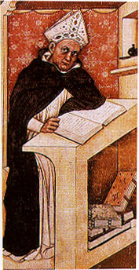
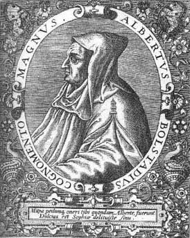
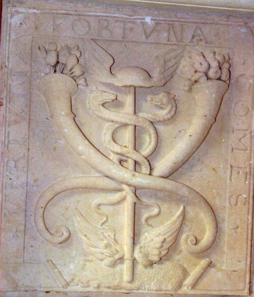

LE COMPOSÉ DES COMPOSÉS attribué à
ALBERT LE GRAND
revu le 22 septembre 2006
Plan : biographie sommaire - commentaire sur l'alchimie médiévale au temps d'Albert Le Grand - un commentaire sur l'oeuvre alchimique supposée d'Albert Le Grand - Albert Le Grand, selon l'Histoire de la Chimie de F. Hoefer - l'oeuvre d'Albert le Grand, selon P. Duhem [ses disciples et son astronomie - sa géologie - l'astronomie au Moyen Âge : Albert Le Grand]
- commentaire du Composé des Composés - le Composé des composés [chapitre I : de la formation des métaux en général - de la nature du Mercure - de l'Arsenic - chapitre II : de la putréfaction - chapitre III : du régime de la Pierre - chapitre IV : de la sublimation du Mercure - chapitre V : de la préparation des eaux d'où l'on tire le Mercure : eau prime - eau seconde - eau tierce - eau quarte - Propriétés de ce Mercure - Multiplication du Mercure philosophique - Pratique du Mercure des Sages ]
1)-biographie tirée de : http://www.bnf.fr/web-bnf/pedagos/dossitsm/biograph.htmNé à Lauingen, dans le duché de Souabe (Allemagne), d’une famille de militaires au service de l’Empire, Albert étudie les lettres et la médecine à Venise et à Padoue. En 1223, il entre dans l’ordre des Prêcheurs (chez les Dominicains). Il va alors étudier la théologie à Cologne et y enseigne à partir de 1228. Vers 1240-1241, il découvre à Paris, où il est venu enseigner, les traductions des textes grecs et arabes et commence à travailler sur Aristote et son commentateur arabe Averroès. Nommé Maître de l’Université de Paris en 1245, il a pour disciple Thomas d’Aquin. Puis il retourne à Cologne, où il est chargé de fonder l’École supérieure de théologie qu’il dirige jusqu’en 1254.

FIGURE I
(Albert Le Grand, Tomasso da Mondena. Coll. UGB)En 1259, il structure avec Thomas d’Aquin les études des Prêcheurs, en les ouvrant aux philosophies nouvelles. Il poursuit son enseignement de ville en ville (Würzbourg, Strasbourg, Cologne) et revient à Paris, vers 1276-1277, pour tenter d’apaiser l’hostilité des théologiens de l’université contre les philosophies grecque et arabe. Il laisse une oeuvre savante d’une grande ampleur, particulièrement brillante dans les domaines :
Conçus sur le modèle de l’encyclopédie d’Aristote, ses traités de sciences naturelles condensent les textes grecs et latins commentés et complétés par les Arabes (dans les domaines de l’astronomie, des mathématiques, de la médecine) ; mais Albert ajoute ses propres critiques et observations. Il prône l’expérience, n’hésitant pas à interroger lui-même les spécialistes. Ainsi son traité Des Animaux est composé de dix-neuf livres rapportant les données antiques et de sept livres qui sont les fruits de ses observations et de ses enquêtes auprès de chasseurs, fauconniers, baleiniers... Il classe plus de quatre cents espèces végétales (Des Végétaux). S’autorisant à critiquer Aristote, il corrige chaque fois qu’il le juge utile les erreurs de l’héritage antique. Son oeuvre philosophique est très importante : ses paraphrases d’Aristote et d’Averroès ont été des vecteurs de diffusion en Occident des philosophies grecques et arabes, qu’il a été le premier savant chrétien (vite relayé par son disciple Thomas d’Aquin) à faire entrer dans la doctrine chrétienne.S’il a fait preuve de moins d’originalité dans son oeuvre théologique, les divers commentaires des Evangiles, des Sentences de Pierre Lombard, des prophètes, portent cependant sa marque. Canonisé en 1931, il est proclamé patron des savants chrétiens en 1941.
- des sciences naturelles,
- de la philosophie,
- de la théologie.

FIGURE II
(Albert le Grand)
2)- commentaire sur l'alchimie médiévale : au temps d'Albert le Grand [tiré et adapté de l'Alchimie : histoire, technologie, pratique, Belfond, 1972 ; in Structures et processus de transmission de la tradition alchimique de Heinrich Schipperges]
Pour brosser un tableau historiographique valable de l'alchimie dans sa période la plus reculée, il est indispensable de ne pas négliger quelques questions préliminaires d'ordre méthodologique. A plusieurs reprises déjà, nous avons attiré l'attention sur les
difficultés de la terminologie hermétique: rappelons seulement que la célèbre pierre philosophale a été désignée sous environ six cents vocables divers, qui ne servaient pas seulement à la dénommer, mais lui conféraient, de toute évidence, un rôle cryptique. Il convient, en second lieu, de noter l'usage, voire l'abus du recours à des autorités apocryphes: Hermès, Albert, Thomas, Raymond Lulle ou Paracelse, pour ne citer que ceux-là. Cette tendance est liée au foisonnement d'une littérature pseudonymique, largement représentée aujourd'hui encore, dans les grandes collections d'imprimés du XVIIe et du XVIIIe siècle, et a pénétré jusqu'aux dictionnaires encyclopédiques de l'âge baroque et du Siècle des Lumières. Ces abus n'ont été signalés que d'une façon marginale, et seulement pour des supercheries décelables à n'importe quelle époque, c'est-à-dire, non pas tant pour les falsifications de textes que pour les faux procédés de «fabrication d'or». En fin de compte, on a beaucoup trop négligé la surévaluation historiographique dans l'alchimie, ancienne ou récente, telle qu'elle résulte des critères insuffisants fournis par les «historiens» anciens et même actuels. Aussi, avant d'exposer quels ont été les pôles de cristallisation de la tradition spirituelle, au cours de sa transmission entre les périodes antiques, médiévales et modernes, nous faut-il en esquisser brièvement l'historiographie. On ne peut guère s'attendre à trouver des considérations de cet ordre dans les exposés des scolastiques arabes qui ont délibérément ignoré l'histoire. Leurs textes, à la transmission purement doxologique, même lorsqu'il s'agit de sciences exactes, ont été dotés de chaînes de références, dites isnad, les plus longues possible, les rapportant à des autorités traditionnelles. Cela apparaît clairement dans le traité, perpétuellement récité, des Secrets des secrets (Sirr al-asrar) que l'on a maintes fois intitulé Epistola Aristotelis. Le même caractère doxographique se décèle dans la prétention des scolastiques latins pour qui Aristote est sans conteste la grande autorité. Non point l'« Aristoteles graecus », relégué à l'arrière-plan, mais un Aristote mythique, arabisé et teinté de néo-platonisme, se substituant à lui. Sans aucun doute, est-ce sur la vague de cet aristotélisme-là que s'est trouvé porté le monde souvent chaotique de la pensée hermétique, pour être ensuite transfusé, à l'état dissous, dans la conscience des temps modernes. Cela n'implique aucunement que le monde médiéval ait accepté sans réflexion les courants d'idées contemporains ni qu'il ait adhéré d'emblée à toute espèce d'autorité. A la fin du XIIe siècle, Jean de Salisbury s'en prend énergiquement aux jeunesmédecins et investigateurs de la nature, qui, après un court séjour à Salerme et à Montpellier, arrivaient dans les collèges universitaires pour y propager leurs manipulations et leurs expériences trompeuses. Ils avaient la bouche pleine de mots étrangers impressionnants et sans signification afin de faire croire qu'ils connaissaient tous les secrets de la nature. Mais, que l'on aille les serrer de près, il n'en subsistait que le vieux dicton d'Hippocrate, qui enjoint de percevoir ses honoraires tant que le patient souffre.« Et c'est ainsi que les infirmités du malade forment une belle alliance avec l'avidité de tels guérisseurs.»
Nous trouvons la même attitude critique à l'égard de la tradition hermétique. C'est ainsi qu'Albert le Grand est capable de faire la différence précise entre le contenu spirituel fondamental, l'idéologie technologique et les manipulations pragmatiques. Il aurait fait une étude critique de la plupart des textes alchimiques
«et trouvé qu'ils se réclament exclusivement d'autorités et non de preuves, en cachant leur signification derrière des expressions métaphoriques, ce qui n'a jamais été la coutume de la philosophie ».
C'est uniquement chez Rhazès et Avicenne qu'il aurait trouvé des éléments utiles pour la solution d'un problème. Néanmoins, pour Albert le Grand, Aristote demeure l'«archidoctor philosophiae », un « princips peripateticorum » ; aussi bien, la méthode péripatéticienne des Arabes est devenue pour lui une règle d'or scientifique, à ce point même que, de son vivant, on le surnomme « le singe d'Aristote ». Cependant, contestant cette suprématie d'Aristote, une critique d'un surprenant libéralisme se fait jour dès le XIIe siècle. C'est ainsi que Petrus de Trabibus écrit dans un commentaire aux Sentences, qu'il ne voit aucun motif à recevoir des « dicta Aristotelis » comme celles des prophètes ou des Évangiles. Et pourtant, plus encore que l'irruption des documents et des matériaux, c'est encore et toujours la méthode aristotélicienne, telle qu'elle fut consacrée par Thomas d'Aquin (1225-1274)qui domine. Chez Dante, par exemple, on ne relève pas moins de trois cents citations des écrits d'Aristote, « le maître de ceux qui savent ».
Roger Bacon (1214-1295), plus nettement encore qu'Albert le Grand, distingue une « alchemia speculativa » d'une « alchemia pratica ». Cependant, son apophtegme toujours cité, « sine experientia nihil sufficienter scire potest » n'impliqueaucunement une pensée originale et nouvelle, ni même une soif d'expérimentation, mais seulement un lieu commun traditionnel, celui du couple, « ratio et experimentum », qui avait instruit la pensée médiévale longtemps avant Roger Bacon. [...]
3)- un commentaire sur l'oeuvre alchimique d'Albert le Grand [tiré et adapté de L'Alchimie, L. Girardin, Culture, Art, Loisir, Paris, 1972]
Son oeuvre semble gigantesque: vingt et un volumes in-folio. On y trouve peu d'idées originales: Albert le Grand a puisé ses connaissances dans les traductions latines d'Aristote et des savants arabes. Il se proposait de fortifier la théologie en la fondant sur la rationalité des sciences positives et voulait magnifier la Divinité en montrant toutes les merveilles de la création. Ses multiples livres sont l'écho muet de l'enseignement vivant qu'il prodigua à travers toute l'Europe. Le Docteur Universel étudia les minéraux et l'art d'alchimie dans ses Cinq livres sur les Minéraux et les Métaux. On a parfois mis en doute l'authenticité de cette oeuvre ; elle semble bien pourtant de sa plume, et il en existe des manuscrits pratiquement contemporains. Albert le Grand se réfère aux Météorologiques d'Aristote et au Traité d'Avicenne : on y retrouve la théorie des deux exhalaisons sous la forme des principes Soufre et Mercure.
Le Premier livre traite des minéraux en général, de leur origine et de leurs qualités.
Le Second livre étudie les pierres précieuses et leurs vertus magiques; Albert le Grand partageait sur ce point les croyances de son époque: ne le lui reprochons pas! Combien de personnes attribuent toujours une influence bénéfique au diamant et une influence néfaste à la pierre de lune !
Le Troisième livre expose la composition théorique des métaux. Puisqu'on peut les amener à l'état liquide en les soumettant au feu, il y a en eux une certaine qualité humide. Cette dernière se mêle à une certaine onctuosité chaude. On reconnaît là les deux exhalaisons d'Aristote qu'Albert désigne sous leurs noms de Soufre et de Mercure. Il aborde ensuite le problème des transmutations, examinant longuement les deux explications en présence. Aristote n'avaitjamais bien précisé sa théorie du mixte. Le Docteur Universel rappelle que, pour les uns, la forme reste unique, parfaite dans le cas de l'or, plus ou moins incomplète pour les autres métaux imparfaits. Il faut guérir ces malades par des médecines ou élixirs composés de telle sorte qu'ils pénètrent bien le métal à guérir afin que le cuivre devienne réellement argent, le plomb or, le fer argent, en sorte que cette guérison supporte victorieusement l'épreuve du feu.Pour les autres, chaque métal a deux formes: une première visible et une seconde occulte, cachée. L'art peut manifester cette dernière ; ainsi, au fond de lui-même, le plomb possède la forme et les qualités de l'or et, en brûlant son corps externe, le grain pur et central vient à la lumière et donne de l'or. Pour les tenants de la première opinion, il faut ajouter ce qui manque pour arriver à la perfection; pour les seconds, il s'agit d'enlever l'enveloppe de crasse et d'impuretés pour dévoiler la perfection qui existait en puissance. Avicenne avait élevé une objection contre la possibilité de transmuer artificiellement : il aurait fallu pour cela ramener d'abord le métal à la matière métallique primitive, voire même à la matière première totalement indifférenciée, toutes choses bien au-delà des possibilités humaines. Cette objection logique ne troubla pas Albert le Grand. Les médecins guérissent bien les malades en les purgeant de tous leurs maux, pourquoi les alchimistes n'en feraient-ils pas autant ? Pourquoi ne pourraient-ils pas imiter dans leurs appareils ce que la Nature opère dans son grand laboratoire ? Il suffit pour cela de savoir comment agissent les vertus célestes qui, pour lui, comme pour Artefius et plus généralement comme pour tout homme instruit de cette époque, influencent et gouvernent les choses terrestres.
L'art d'alchimie consiste à corrompre le mixte métallique pour lui enlever sa forme afin qu'une autre forme puisse ensuite être suscitée. Si l'on ne modifie pas profondément la forme, si l'on se contente de blanchir avec de la teinture blanche ou de jaunir avec de la teinture jaune, on n'aboutit qu'à des contrefaçons d'argent ou d'or :
« Je l'ai observé moi-même, remarque Albert. On m'a remis de l'or alchimique mais ce n'était pas de l'or. En l'essayant au feu à six ou sept reprises, il s'est consumé et n'a laissé que des cendres.»
Les influences célestes restent toutefois insuffisantes. Les métaux ne s'engendrent pas n'importe où dans la Nature, mais seulement en des lieux appropriés. Le dominicain se réfère aux exemples des sables aurifères du Rhin ou des mines d'argent de Freiberg en Saxe. La disposition favorable de ces lieux a permis aux vapeurs primordiales de circuler un nombre suffisant de fois pour s'imprégner des vertus de la terre et se transformer en filons métallifères. Les Cinq Livres sur les Métaux se poursuivent par l'étude des diverses caractéristiques de ces éléments: fusibilité, ductilité, couleur, saveur, destruction par le feu (nous dirions oxydabilité). Seule cette dernière propriété nous paraît chimique, toutes les autres restent des propriétés physiques ou mécaniques. La couleur s'avère très importante pour le Docteur Universel : son changement signifie la transformation d'un métal en un autre.
Le Quatrième livre décrit la composition des métaux en termes de Soufre et de Mercure, père et mère des métaux suivant Avicenne. Le vif-argent vulgaire se compose de mercure, avec un petit peu de soufre. Le plomb a beaucoup de soufre fort impur et son mercure ne paraît pas de très bonne qualité. L'or seul n'a aucune imperfection, son soufre est extrêmement clair et pur et son mercure est un mélange parfaitement équilibré de chaleur et d'humidité.
Le livre Cinq et dernier analyse de façon analogue les sels et les autres minéraux. L'alun, par exemple, semble plutôt terreux: son mercure est bien déficient et, comble de malchance, il a été coagulé non seulement par du soufre, mais par de l'arsenic, ce voisin du soufre. Ces deux esprits lui paraissent des frères jumeaux que les alchimistes peuvent utiliser indifféremment pour leurs teintures purpurines.
Le Docteur Universel eut le pressentiment de l'élément chimique ou, plutôt, des actions chimiques entre éléments. Dans ses Cinq Livres, il emploie à ce sujet le mot d'« affinité » qu'on utilise toujours pour désigner le même effet :
« Le soufre, écrit-il (et par soufre il faut entendre ici le corps chimique vulgaire), brûle les métaux à cause d'une certaine affinité de nature. »
Mais il faut toujours faire très attention lorsqu'on interprète une pensée vieille de six siècles et demi. Ce mot d'affinité avait-il pour lui le sens que lui donnent les chimistes modernes ? Il s'avère impossible de répondre oui ou non. La question a-t-elle même un sens ? Pour parler d'affinité entre éléments chimiques, il faut d'abord que l'on définisse des éléments chimiques. Le mixte n'était en rien un élément, au sens donné à ce dernier mot par nos chimistes. Mélange plus ou moins harmonieux des Quatre Éléments Principes ou des Quatre Qualités, le mixte devait à cette structure de composé ses possibilités de transformation. La découverte de la véritable affinité exigeait que l'on eût d'abord l'idée de corps simple, ou d'élément chimique. Le mérite en revient à Robert Boyle au milieu du XVIIe siècle. Il fallait aussi imaginer que des lois générales régissent la matière. Le principe de gravitation universelle de Newton, grand ami de Boyle, joua un rôle de premier plan dans la découverte de l'affinité par le chimiste Geoffroy l'Aîné, au début du XVIIIe siècle.
Dans les oeuvres complètes d'Albert le Grand se trouve un petit traité: Sur l'Alchimie. A-t-il bien été composé par lui ? Il semble que la réponse soit non. D'abord, on y trouve cités des auteurs bien postérieurs comme, par exemple, Philippe Ulsted qui vécut au XVe siècle, mais il peut s'agir de gloses mises en marge d'un manuscrit et réincorporées ultérieurement dans le texte. Surtout, l'auteur de ce petit traité se réfère souvent à Geber, non pas Djabir l'Arabe, mais le Geber de la Somme de Perfection, un ouvrage bien postérieur. Il ne s'agit plus cette fois d'une glose isolée et le traité Sur l'Alchimie semble même une sorte d'abrégé de la Somme. Or, cette dernière contient une idée nouvelle extrêmement importante: celle de la pierre philosophale, teinture universelle capable de transmuer en or ou en argent une grande quantité de métal imparfait. Dans les Cinq Livres des Métaux, Albert ignorait tout de cet agent merveilleux. De toute évidence, le Traité sur l'Alchimie s'avère apocryphe. Cette forgerie ne reste pas un cas isolé, on a mis d'autres faux sous le patronage du grand scolastique, en particulier le Composé des Composés, le Traité de la Pierre Philosophale. Ces fausses attributions commencent alors à se multiplier. Certes, les auteurs présumés sont généralement des personnes qui manifestèrent de l'intérêt pour l'alchimie. Au reste, il est assez facile de séparer l'ivraie du bon grain : les traités authentiques sont toujours beaucoup plus sobres que les apocryphes, enclins à donner dans le merveilleux et le fantastique.
4)- Albert Le Grand, selon l'Histoire de la Chimie de F. Hoefer : cf. prima materia
5)- Pierre Duhem - extrait du système du monde : histoire des doctrines cosmologiques de Platon à Copernic. Tome IX / Pierre Duhem
V. ALBERT LE GRAND ET SES DISCIPLES
Tout ce qui, dans les écrits du Stagirite et de son Commentateur, prépare le retour à une théorie platonicienne de la gravité semble avoir excité, à un très haut degré, la méfiance d'Albert le Grand, de son disciple Thomas d'Aquin, et de Pierre
d'Auvergne, qui fut l'élève et le continuateur de Saint Thomas. Les divers passages qui sollicitaient dans ce sens la raison du lecteur ont été, dans leurs commentaires, passés sous silence, atténués, ou même interprétés dans un esprit qui n'était point celui de l'auteur. Au contraire, les divers passages où la gravité est considérée comme une tendance du corps pesant à gagner le centre du Monde ont été mis en pleine lumière. Dans son Traité du Ciel et du Monde, Albert le Grand expose avec soin les raisonnements à l'aide desquels Aristote tire, de la pesanteur, l'explication de la figure sphérique de la terre [ALBERTI MAGNI Libri de Caelo et Mundo, lib. II, tract. III, cap. VIII.] et des mers [ALBERTI MAGNI Op. laud., lib. II, tract. II, cap. III.]. Lorsqu'il commente le quatrième livre de la Physique, il se heurte [ALBERTI MAGNI Libri physicorum, lib. IV, tract. I, cap. XV.] à la théorie développée par Aristote, selon laquelle l'eau se meut naturellement jusqu'au moment où elle est conjointe à l'air, parce que l'air est à l'eau comme une forme à l'égard d'une matière. De cette proposition, il donne déjà une interprétation qui dévie du sens que lui attribuait Aristote :« Le corps logeant est au corps logé ce que l'air est à l'eau ; l'eau, en effet, est la matière de l'air, et l'air est comme l'espèce et la forme de l'eau ; l'eau est comme une puissance, une matière, une corruption de l'air ; l'air est comme un acte et une génération de l'eau ; l'air, il est vrai, est aussi de l'eau en puissance, mais en vertu d'un autre mode de puissance et par suite de la génération cyclique des éléments ; mais si l'on compare les éléments au point de vue de la noblesse et de la formalité, l'air est l'acte de l'eau et l'eau est la puissance de l'air. »
Ces explications, peu conformes aux indications du Stagirite, trahissent déjà l'embarras que cause à Maître Albert la doctrine platonicienne du lieu naturel qu'il rencontrait au quatrième livre des Physiques. Ces considérations, d'ailleurs, il promet de les compléter au quatrième livre du Traité du Ciel. Recourons donc à ce complément [ALBERTI MAGNI Libri de Caelo et Mundo, lib. IV, tract. II, cap. I.].
« La surface concave de l'orbe de la Lune (orizon) est le contenant de tous les corps qui se meuvent vers le haut ; de même, le milieu, c'est-à-dire l'espace borné par la surface [interne] de l'eau, est le contenant de tous les corps qui se meuvent simplement vers le bas. Or contenir, c'est l'acte d'une
forme. Tout lieu sera donc une forme. Chacun de ces deux lieux, en effet, contient certains corps, et vers lui se meut tout corps qui en est en puissance... ; il faut donc qu'une certaine partie de ce qui borne en haut et qu'une certaine partie du milieu qui est en bas soient comme la forme de la chose contenue. Je dis : Une certaine partie de ce qui borne en haut. Ce n'est pas, en effet, le corps contenant tout entier, qui est forme [du corps contenu] ; il est bien plutôt le contraire de cette
forme. [Ce qui est forme du contenu], c'est la surface ultime qui renferme et touche le corps contenu par elle. Et cette surface même, si elle, est semblable [au contenu], ce n'est pas parce qu'elle est surface du corps contenant, mais parce qu'elle est le terme du corps logé. Cette surface, en effet, si on la rapporte au corps dont elle est la surface, elle a une forme contraire au corps logé et capable, peut-être, de détruire ce corps ; si on la rapporte, au contraire, à la distance du lieu auquel elle sert de terme, en tant qu'il est lieu, elle possède en elle-même des propriétés et des forces susceptibles de perfectionner, de conserver et de contenir le corps logé. » [on remarque bien, dans ce passage, que, parlant non point de choses hermétiques, mais s'exprimant sur des observations absolument naturelles, le ton employé par Albert n'est guère éloigné de celui que l'on note dans les écrits hermétiques. Raison pour laquelle il nous paraît du plus haut intérêt de confronter les écrits « classiques » aux écrits réputés hermétiques]Albert exprime sa pensée avec quelque obscurité ; il semble cependant qu'on la puisse tirer au clair, et cela de la façon suivante : Autour du centre du Monde, on peut décrire une certaine surface sphérique dont le volume sera ce que nous nommerons le milieu du Monde. Cette surface sphérique sera ou pourra être la surface interne de l'espace occupé par l'eau ; mais ce n'est pas ainsi que nous la considérons lorsque nous disons qu'elle est le lieu naturel de la terre. Abstraction faite de la relation qu'elle a ou peut avoir avec l'élément de l'eau, cette surface est douée de certaines propriétés, est capable d'exercer certaines forces ; par ces propriétés, par ces forces, elle a une certaine similitude avec la terre, elle peut retenir la terre, la conserver, l'amener à sa perfection ; par ces propriétés, par ces forces, donc, elle joue, à l'égard de la terre, le rôle d'une forme. Lorsque la terre se meut de mouvement naturel, elle tend à se loger à l'intérieur de cette surface, afin d'y trouver les actions qui la conserveront et la rendront plus parfaite ; elle se meut donc vers le milieu du Monde comme une matière se meut vers sa forme. [il y a quelque sophisme dans ces explications, qui exprime le décalage entre la pensée d'un intellectuel du XIIIe siècle et celle d'un savant du XIXe siècle] Et lorsqu'elle se meut ainsi vers son lieu naturel, ce n'est pas pour se trouver au contact de l'eau; c'est pour se trouver contenue dans la surface sphérique qui lui est, en quelque sorte, congénère. Ainsi, autour du centre du Monde, quatre surfaces sphériques ont été tracées ; la première a été douée de propriétés et de forces qui la rendent capable de conserver et de perfectionner la terre ; la seconde est prédisposée de même à l'égard de l'eau, la troisième à l'égard de l'air, la quatrième à l'égard du feu ; chacune d'elles est, à l'un des éléments, ce qu'une forme est à une matière ; et c'est pourquoi chacun des éléments trouve son lieu naturel dans l'un des volumes que délimitent ces sphères.
Cette interprétation de la pensée d'Aristote déforme assurément cette pensée ; elle la déforme, afin de s'écarter de l'interprétation, autrement exacte, d'Averroès, qui ramenait la théorie du lieu naturel au principe platonicien de la marche du semblable vers le semblable. Mais, en cherchant à fuir ce principe, c'est d'une autre théorie platonicienne qu'Albert le Grand se rapproche. Ces surfaces sphériques, concentriques au Monde, dont chacune a la propriété de conserver et de contenir l'un des éléments, ne nous rappellent-elles pas la cwra du Timée [Voir : Première partie, ch. II, § III : t. I, p. 41-42] [cf. Chevreul, idée alchimique, V] qui, comme un crible, triait et séparait les uns des autres les divers corps simples ? Mais poursuivons la lecture des ouvrages d'Albert le Grand. Le traité Sur la nature des lieux va compléter et préciser la théorie que la Physique appelait, que le Traité Du Ciel et du Monde avait esquissée ; en même temps, il nous fera connaître les sources où le futur évêque de Ratisbonne en a puisé l'idée première. Citons quelques passages de ce nouvel ouvrage.« Le mot lieu, dit Albert [ALBERTI MAGNI Tractatus de natura locorum, tract. I, cap. II.], se prend en deux sens. D'une première façon, on nomme communément lieu n'importe quel corps qui enveloppe par l'extérieur un autre corps, ce corps-là étant considéré au point de vue de la surface qui contient et touche celui-ci. D'une seconde manière, on nomme lieu la concavité d'une surface, concavité vers laquelle se fait le mouvement d'un autre corps. »
En ce second sens, les corps célestes
« n'ont pas, à proprement parler, de lieu ; ils sont le lieu des autres corps. Au contraire, les corps simples qui sont doués du mouvement rectiligne et les corps composés au moyen de ceux-ci ont, selon leur nature, un lieu vers lequel se fait leur mouvement ; ce lieu, les corps simples y ont droit par eux-mêmes et les corps, composés par l'intermédiaire des corps simples qui les forment...Le corps simple doit être logé dans la concavité simple du corps où réside sa génération ; c'est vers cette concavité que se dirige son mouvement ; si on l'en tient écarté, il marche rapidement à sa destruction... La cause en est qu'il y a communauté de nature entre le lieu et le corps logé.... Aussi avons-nous dit dans la Physique que le lieu naturel d'une chose, ce n'est pas n'importe quelle surface... En vertu des forces que possède en elle-même la surface logeante, le lieu est un principe de conservation pour le corps qu'il loge. » [il est remarquable de voir qu'Albert n'assigne point de lieu aux corps célestes. On pourrait y voir une anticipation du mouvement absolu des corps, tels qu'ils ont été compris au XIXe siècle, cf. expérience de Morley et Michelson sur le mouvement absolu de la Terre]
Mais d'où vient au lieu naturel ce pouvoir d'engendrer et de conserver le corps qui s'y loge ? Albert va nous l'expliquer [ALBERTI MAGNI Op. laud., tract. I, cap. IV.].
« On se demandera peut-être avec étonnement d'où vient au lieu cette force si grande en vertu de laquelle, en un certain lieu, une partie de la matière universelle des corps reçoit la forme du feu, tandis qu'ailleurs, une autre partie reçoit la forme d'air, ou de feu, ou de terre. La matière, en effet, par elle-même, n'a absolument aucun lieu. De même, la matière qui est seulement sous la forme de corps, bien qu'elle soit circonscrite par un lieu, n'exige point ce lieu, caractérisé par certaines différences locales, vers lequel se fait tout mouvement local ; si une telle différence locale, vers laquelle se fasse un mouvement local, se trouve exigée, c'est seulement en raison d'une forme substantielle déterminée ; cette forme, en effet, en tant qu'elle est forme substantielle, appartient à un corps susceptible de génération. II semblera peut-être que la surface dont la concavité contient le corps logé, peut être regardée comme une chose qui appartient au corps logeant, et non pas au corps logé ; qu'elle
possède donc en elle les vertus du corps logeant, et, par conséquent, que son action doit avoir pour terme la forme du corps logeant, mais non celle du corps logé. Il semble ainsi que la concavité du feu ne devrait pas produire de l'air, mais du feu...Comme nous l'avons dit au Traité du Ciel et du Monde,
c'est là une erreur. Aussi, avec Avicenne et certains philosophes, devons-nous tenir le langage suivant : Ce lieu naturel qui a le pouvoir d'induire des formes [substantielles déterminées] dans la matière des corps simples, c'est la surface du corps contenant prise avec sa distance à l'orbe céleste. C'est, en effet, cette distance qui cause le chaud et le froid, l'humidité et la sécheresse, qui sont les vertus naturelles des éléments. Si, par exemple, cette distance est nulle, à l'aide du mouvement et de la lumière, elle induit [dans la matière corporelle] la suprême chaleur, la subtilité et la sécheresse, qui ne sont point autre chose que la forme du feu. »La génération de l'air, puis de l'eau, s'expliqueront d'une manière semblable par des
distances croissantes à l'orbe céleste.« Quant à la distance parfaite, la chaleur lui fait complètement défaut ; bien plutôt ce qu'elle possède, c'est le froid qui resserre les parties de la matière ; qui, en exprimant tout ce qui est humide, est cause de la solidité ; qui induit donc, en la matière, la forme de la terre. Tout cela sera plus complètement manifesté au Perigeneseos et au livre des Météores. Ce que nous venons de dire, en effet touchant la génération des éléments, nous l'avons dit uniquement pour que ceci soit connu : C'est la distance du lieu à l'orbe céleste qui, par ses différences, cause les formes diverses des éléments ; et le mouvement d'un élément se fait vers le lieu qui est déterminé par telle ou telle distance...Toutes ces raisons prouvent la vérité de l'opinion que, d'un commun accord, nous ont transmise trois philosophes, Avicenne, Averroès et Moïse l'Égyptien. Selon cet avis, c'est le lieu considéré sous une distance déterminée à partir du ciel qui cause les formes des éléments ; par conséquent, un élément déterminé se meut vers un lieu qui se trouve sous l'orbe céleste, à telle distance déterminée de cet orbe...Ce pouvoir causal que le ciel répand en tel ou en tel lieu est un pouvoir excellent et divin ; sinon, il n'y aurait aucun mouvement local. Il n'y a point, en effet, de mouvement vers quelque chose que ce soit, si ce n'est en raison de quelque autre chose qui est excellent et divin ; or, de tous les mouvements, le plus parfait est le mouvement local, comme on l'a prouvé au livre Des physiques et au traité Du Ciel et du Monde; en vue de ce mouvement, donc, il faut qu'il existe une chose qui soit, par nature, la plus excellente et la plus divine. »
Albert nous donne cette doctrine pour le résumé de l'opinion commune d'Avicenne, de Maïmonide et d'Averroès. Averroès eût repoussé avec horreur une. bonne partie de
cet enseignement. N'avait-il pas surtout écrit son Discours sur la substance de l'orbe céleste pour combattre cette théorie d'Avicenne qui, à la matière première, impose d'abord une forme corporelle entièrement générale, puis les formes substantielles
particulières des quatre éléments ? Nous avons vu, d'ailleurs, combien la théorie du lieu naturel admise par le Commentateur différait de celle que vient d'exposer le premier maître des Frères Prêcheurs. Moïse Maïmonide eût peut-être accueilli avec plus d'indulgence l'avis que lui prête Albert le Grand. Ne l'avons-nous pas entendu [MOÏSE BEN MAIMOUN dit MAÏMONIDE, Le guide des égarés, deuxième partie, ch. X ; trad. S. Munk, t. II, p. 84-88. — Voir : Première partie, ch. XIII, § XV; t. II, p. 388-390.] distinguer quatre sphères au sein des cieux et, sous la domination de chacune de ces sphères, placer un élément ? Mais de cette indication à une théorie du lieu naturel, il y a fort loin. C'est avec plus de raison qu'Albert se réclame d'Avicenne. Nous avons entendu [ Voir : Troisième partie, ch. II. § IX ; t. IV, p. 488-491.] Avicenne déclarer que l'Intelligence active avait créé la matière des éléments en rassemblant ce que tous les corps célestes ont de commun, c'est-à-dire une nature douée de mouvement circulaire ; que par les divers orbes célestes, telle partie de cette matière s'était trouvée préparée à devenir tel élément, telle autre partie à devenir tel autre élément ; enfin, que, dans les diverses parties diversement préparées de cette matière, l'Intelligence active avait infusé les formes des quatre éléments. Mais faut-il entendre par là que cette préparation de la matière primitivement homogène ait consisté à y tracer certaines surfaces sphériques, dont chacune fut propre à la génération et à la conservation d'un élément déterminé ? Que, par conséquent, la production des divers lieux naturels ait précédé, sinon dans le temps, du moins par nature, la production même des éléments ? Cette opinion ne semble pas être celle d'Avicenne ; bien plutôt, celui-ci paraît se défendre de la professer.« Lorsque la nature d'un élément est déjà complète, dit-il [AVICENN/E Metaphysica, lib. II, tract. IX, cap. V], on peut admettre qu'il soit gardé dans le lieu qui est le plus propre à sa conservation... Mais au principe de la génération de cet élément, il n'y avait pas une surface qui en fût sa surface supérieure et une autre surface qui en fût sa surface inférieure ; c'est à la suite du changement éprouvé par l'effet du mouvement qu'il a eu un lieu. »
Albert le Grand n'a pas mis Al Gazâli au nombre des auteurs, dont il s'autorisait ; il semble, cependant, que le disciple d'Avicenne l'ait, plus que le maître lui-même, conduit à la théorie qu'il développe. Nous avons entendu [Voir : Troisième partie, ch. II. § IX ; t. IV, p. 491-493] Al Gazâli exposer l'enseignement que donnait Avicenne au sujet de la génération de la matière sublunaire et des quatre éléments. C'est la dixième des Intelligences célestes, c'est l'Intelligence active qui a produit la matière et les quatre éléments, mais elle les a produits avec la collaboration des corps célestes. Comme les corps célestes ont, en commun, cette nature universelle par laquelle ils se meuvent tous de mouvement circulaire, ils ont fait que la matière fût apte à recevoir n'importe quelle forme. [on voit par là que, loin d'être une idé fumeuse des alchimistes, l'intégration d'une action planétaire à la détermination des causes des formes sub-lunaires faisait partie du paradigme dominant de l'époque] Mais comme, outre cette nature universelle chacun des orbes célestes a sa nature particulière, ces sphères ont fait que telle partie de la matière fût plus apte à recevoir telle autre forme. Dans ces parties diversement préparées, les formes de chacun des quatre éléments ont été introduites par l'Intelligence active.
« C'est en vertu du voisinage ou de l'eloignement des corps célestes, dit Al Gazâli [Philosophia ALGAZELIS, lib. I, tract. V.], que les matières reçoivent diverses aptitudes... La racine de la matière corporelle provient d'une substance intelligible et séparée ; mais si elle est découpée en parties définies, cette matière le doit aux corps célestes ; et si elle a telle ou telle aptitude, elle le leur doit également. Par suite du rapport qu'il y a entre la chaleur et le mouvement, la partie de la matière qui est la plus voisine du corps toujours en mouvement est la plus digne de recevoir la forme du feu. Au contraire, la matière qui est la plus éloignée des corps célestes est la plus digne du froid et de l'immobilité qui caractérisent la forme terrestre. C'est de cette manière que les corps susceptibles de génération et de corruption reçoivent l'existence. II est manifeste par là qu'il y a une première aptitude de la hylè à recevoir universellement n'importe quelle forme ; puis qu'il y a une certaine cause qui rend cette matière apte à recevoir telle ou telle des quatre natures. »
D'après ce qu'Al Gazâli vient d'expliquer, il semble bien que cette préparation de la matière à recevoir les formes élémentaires consiste en une séparation et en une distinction de parties que caractérise leur plus ou moins grande proximité à la sphère céleste, donc dans le découpage de la matière en couches sphériques concentriques au Ciel.[Voir : Première partie, ch. II, § III ; t. I, p. 41-42.] Nous voici bien près de la pensée d'Albert le Grand. Les surfaces sphériques qui délimitent les lieux naturels des éléments sont toutes concentriques au Monde. Albert n'admet pas que le centre de la sphère terrestre ait été écarté du centre de l'Univers. Lorsqu'il commente le Livre des propriétés des éléments, il répète [ALBERTI MAGNI De proprietatibus elementorum lib. II, tract. I, cap. III.] tout ce que ce livre disait contre l'excentricité de la terre. Dans ses commentaires au De generatione et au traité des Météores, Albert évite de reproduire l'affirmation d'Aristote qui attribue même masse aux divers éléments et leur accorde donc des volumes inversement proportionnels à leurs densités. Mais d'un passage du De Caelo [AI.BERTI MAGNI Libri de Caelo, lib. II, tract. II, cap. III.], il semble résulter qu'il admet un rapport constant entre l'épaisseur (altitudo ou spatium altitudinis) de la couche sphérique occupée par un élément et l'épaisseur de la couche sphérique remplie par l'élément précédent. Cette progression, d'ailleurs, il ne la limite pas aux éléments ; il l'étend aux sphères célestes successives. Voici ce passage :
« Ce qu'est l'épaisseur (spatium altitudinis) de l'eau à [celle de] la terre — car [l'épaisseur de] l'eau est multiple de [celle de] la terre — l'épaisseur (altitudo) d'un élément quelconque l'est à celle d'un autre élément ; toujours, en effet, [l'épaisseur de] l'élément le plus élevé, parce qu'il est plus formel, est multiple de [l'épaisseur de] l'élément qui se trouve au-dessous de lui. De même aussi que l'épaisseur (simile spatium) du [premier] ciel est multiple de l'épaisseur (spatium) du feu, l'épaisseur (spatium) d'un ciel supérieur est multiple de l'épaisseur (spatium) du ciel qui lui est inférieur. »
Albert ajoute qu'il appartient à l'astronome de déterminer ces épaisseurs. Les astronomes de son temps trouvaient, en effet, dans les traités d'Al Fergani et d'Al Battani, des déterminations des épaisseurs des divers orbes ; mais ces épaisseurs
ne se suivaient aucunement comme les termes d'une progression géométrique. La loi qu'admettait Albert le Grand entraînait assurément cette conséquence : L'épaisseur de la couche sphérique que l'eau remplit est supérieure au rayon de la sphère dont la terre
est voisine, comme, d'ailleurs, cette sphère et cette couche sphérique étaient supposées concentriques, il devenait malaisé d'expliquer qu'une partie de la terre pût émerger. Albert tente, cependant d'en donner la raison ; celle qu'il présente avec pompe est puérile.« Les savants, dit-il [ALBERTI MAGNI Libri Metheororum, Lib. II, tract. III, cap. I,], qui ont atteint la perfection touchant les choses humaines que l'homme peut connaître et qui ont parlé des choses naturelles, ont déclaré que l'existence de la mer provenait du principe suivant : Au début, l'eau liquide
couvrait toute la terre ; mais le Soleil, agissant continuellement sur cette eau liquide, en élève, sous forme de vapeurs, une partie qu'il convertit en air et en feu ; cela se passe surtout du côté du midi, où le Soleil est plus ardent ; toutefois, une certaine quantité de liquide, non consumée par le Soleil, est
demeurée, particulièrement vers le Nord. Selon cette opinion, donc, la mer qui, tout d'abord, recouvrait la terre entière, a vu diminuer son volume primitif ; la terre ferme a émergé en certains lieux tandis qu'ailleurs, la mer est restée. Mais, touchant une chose homogène, ce qui est vrai d'une partie l'est du tout ; ces savants admettent donc qu'avant la fin des temps, la mer sera totalement desséchée et qu'il restera seulement trois éléments. »Comme son maître Albert le Grand, Saint Thomas d'Aquin, lorsqu'il expose les enseignements du Peri Ouranou, reproduit avec soin les raisonnements par lesquels le Stagirite trouve, dans la pesanteur, la raison d'être de la figure de la terre [SANCTI THOMAE AQUINATIS In libros Aristotelis de Caelo et Mundo expositio, lib. II, lect. XXVII.] et des mers [SANCTI THOMAE AQUINATIS Op laud; lib. II, lect. VI.]. C'est avec un embarras visible que Thomas d'Aquin cherche [SANCTI THOMAE AQUINATIS In libros physicorum Aristotelis expositio, lib, rv, lect. VIII.] l'interprétation du passage de la Physique où le Philosophe s'efforce d'expliquer les propriétés du lieu naturel. Qu'est-ce que cette similitude entre l'air et l'eau en vertu de laquelle l'eau se meut naturellement vers la surface interne de l'eau comme la partie se meut vers le tout dont elle a été séparée ?
En quel sens peut-on dire, avec Aristote, que l'air se comporte à l'égard de l'eau comme une matière à l'égard d'une forme ? Dans la réponse que le Doctor communis donne à ces questions, on perçoit les influences les plus diverses, celle de Simplicius,
celle d'Al Gazâli, mais surtout celle d'Albert le Grand et celle de Roger Bacon. La pensée du Philosophe se trouve singulièrement altérée par ces influences. Il faut admettre, tout d'abord, qu'une hiérarchie naturelle dispose les divers corps les uns par rapport aux autres ; le corps céleste est le plus noble, puis vient le feu, puis l'air, puis
l'eau, enfin la terre qui est le moins noble de tous. [le corps céleste, selon cette vue, a valeur de quintessence. Ce n'est pas autrement que les alchimistes s'expriment, cf. humide radical métallique] Cette gradation entre les corps est une gradation entre leurs formes substantielles. Quand l'eau se change en air, une forme moins noble est remplacée par une forme plus noble ; aussi Thomas d'Aquin dit-il alors qu'il y a génération absolue (simpliciter ) et corruption relative (secumdum quid). Au contraire, quand l'air se transforme en eau, il y a corruption absolue et génération relative, parce que la matière première dépouille une forme plus noble pour revêtir une forme moins noble. En disant donc que l'eau est à l'égard de l'air comme une matière à l'égard d'une forme, nous entendons affirmer entre ces deux éléments une relation de moins parfait à plus parfait.« Mais l'ordre qui règle les situations des diverses parties de l'Univers dépend de l'ordre de la Nature... Il faut que la hiérarchie des lieux naturels corresponde à la hiérarchie des corps qui s'y trouvent naturellement logés. »
Du centre du Monde, donc, à la concavité de l'orbe de la Lune, les lieux naturels des
quatre éléments, vont s'étager comme s'étagent les degrés de noblesse de ces éléments. Pour réaliser cet ordre de la nature, chaque élément se mouvra naturellement jusqu'à ce qu'il se trouve contenu par l'élément qui se place immédiatement au-dessus de lui dans la hiérarchie des formes substantielles ;« c'est de cette façon que la proximité de nature entre le corps contenant et le. corps contenu est la cause pour laquelle un corps se meut vers son lieu propre. »
Cette place dans la hiérarchie naturelle, qui lui confère l'aptitude à fournir un lieu propre à l'élément immédiatement inférieur, d'où chaque élément la tient-il ?
« II faut considérer, dit Saint Thomas, que le Philosophe parle ici des corps au point de vue de leurs formes substantielles. Ces formes, ils les tiennent de l'influence du corps céleste ; celui-ci, en effet, est. le premier lieu, et c'est lui qui, à tous les autres corps, donne la vertu locative. Au point de vue des qualités actives et passives, au contraire, il y a contrariété entre les éléments, et chacun d'eux est, pour les autres, un agent de corruption. »
Bien au contraire, Aristote avait dit très clairement, et Averroès avait répété de la façon la plus formelle, que la ressemblance qui fait de l'air un congénère de l'eau, qui rend l'air apte à devenir le lieu propre de l'eau, c'est l'humidité qui leur est commune à tous deux et que ne possèdent pas les deux autres éléments. Comme Albert le Grand, Thomas d'Aquin s'écarte sensiblement ici de la pensée du Stagirite..Dans cet ordre de la nature (ordinatio naturae), inconnu au Péripatétisme, qui émane du Ciel, le premier des lieux, qui confère aux éléments des formes distinctes des quatre qualités passives, des formes hiérarchisées en vertu desquelles chacun d'eux devient congénère de celui qui le suit et capable de lui servir de lieu, ne reconnaissons-nous pas un peu la qesiV de Damascius et de Simplicius et beaucoup la nature universelle de Roger Bacon
[Libri de caelo et mundo ARISTOTELIS cum expositione SANCTI THOME DE AQUINO et cum additione PETRI DE ALVERNIA. — Colophon : Venetijs mandato et sumptibus Nobilis viri domini Octaviam Scoti Civis modoetiensis. Per Bonetum Locatellum Bergomensem. Anno a Salutifero partu virginali nonagesimoquinto supra millesimum fac quadringentesimum. Sub Felici ducatu Serenissiml principis Domini Augustini Barbadici. Quintodecimo Kalendas Septembres, Lib. IV, comm. 23, fol. 71, col. a et b.].
Pierre d'Auvergne a commenté les parties du Peri OuranoV que son maître Thomas d'Aquin n'avait pas eu le temps d'exposer. Du mouvement naturel qui porte les corps graves ou légers vers leurs lieux propres, il donne une explication d'où toute tendance platonicienne se trouve désormais exclue. Voici, en effet, comment il entend cette pensée d'Aristote : Un corps se meut naturellement vers son lieu propre comme une matière vers la forme qui la doit perfectionner :
« Être grave ou être léger, ce n'est pas autre chose qu'être en bas ou être en haut... Pour un tel corps, être porté vers son lieu, ce n'est pas, absolument et formellement, être porté vers sa perfection ; c'est être porté vers quelque chose dont il tire la raison d'être de cette perfection ; la perfection d'un tel corps
consiste, en effet, à être en bas ou en haut, et c'est le bas ou le haut qui en constitue la raison d'être. » [on remarque une certaine communauté de vue avec ce qu'enseigne le pseudo-Hermès dans la Table d'Emeraude]Selon cette interprétation, un fragment de terre se meut afin de se placer le plus bas possible, et non pas afin de se trouver contenu par l'eau ; la terre est en son lieu naturel
lorsque son centre est au centre de l'Univers, et non pas lorsque sa surface est recouverte par la sphère aqueuse. Ce commentaire défend, peut-on dire, Aristote contre lui-même, l'Aristote péripatéticien du traité Du Ciel contre l'Aristote platonicien
de la Physique.IX. LA GÉOLOGIE D'ALBERT LE GRAND
On peut dire de la Géologie du XIIIe siècle qu'elle fut la Géologie d'Albert le Grand. La vaste synthèse scientifique qu'Albert avait développée sur le plan des écrits aristotéliciens eut, au cours du Moyen-Age, un nombre immense de lecteurs ; mais, parmi les traités qui la composaient, s'il en est un qui ait joui d'une vogue exceptionnelle, qui ait, de bonne heure, fait autorité, c'est assurément le Traité des météores. Déjà Pierre d'Auvergne, commentant à son tour les livres des Météores,
invoque fréquemment l'opinion d'Albert ; et nous avons dit [Voir : Quatrième partie, ch. VII, § II, t. VI, p. 538-539 et 541-542.] comment le Traité des météores de l'Évêque de Ratisbonne
fournissait le plus grand nombre des questions dont on disputait à la Faculté des Arts de Paris, alors que le XIIIe siècle faisait place au XIVe. Pour composer ses théories géologiques, Albert disposait d'une bonne partie des textes que nous avons analysés ; il connaissait, cela va sans dire, les Météores d'Aristote et le Commentaire d'Alexandre d'Aphrodisias sur cet ouvrage ; il ne possédait certainement pas la Géographie de Strabon, si riche de renseignements sur les opinions géologiques des Anciens ; mais certains indices laissent supposer qu'il connaissait le traité Du Monde attribué à Philon d'Alexandrie, encore qu'il ne cite pas cet ouvrage. Les Latins, au temps d'Albert le Grand, ignoraient peut-être l'Encyclopédie composée par les Frères de la Pureté, bien
qu'une traduction latine d'une partie de cet ouvrage, faite au Moyen-âge, existe encore en manuscrit ; mais le Docteur dominicain a étudié tous les autres textes, d'origine arabe, dont nous avons résumé la doctrine. De tous ces documents et de ses observations personnelles, voyons ce qu'Albert a tiré. Le livre Des propriétés des éléments, qu'on croyait être d'Aristote, eut une grande influence sur les théories scientifiques de la Scolastique ; Albert le Grand en a composé un long commentaire où les fruits de ses propres observations se trouvent introduits dans une paraphrase du texte apocryphe. L'Évêque de Ratisbonne reproduit presque mot pour mot ce que le Pseudo-Aristote avait écrit du changement de place de la .mer et les arguments astrologiques par lesquels il avait réfuté cette opinion [B. ALBERTI MAGNI, RATISPONENSIS EPISCOPI, Liber de causis proprietatum elementorum, lib. I, tract. II, cap. II : De opinione quae dixit mare transmutari de loco ad locum ; cap. III : De improbatione opinionis quae dicit mare transmutari de loco ad locum.] ; mais il y ajoute les remarques qu'il a recueillies au cours de ses voyages :« Peut-être objectera-t-on que la mer d'Angleterre, qui est une partie de l'Océan, s'est retirée de la ville qu'on nommait autrefois Tuag Octavia ; nous avons, de nos propres yeux, constaté qu'auprès de cette
ville, en peu de temps, la mer avait délaissé un grand espace. De même pourra-t-on dire que la mer s'éloigne sans cesse de cette ville de Flandres qu'on nomme Burig (Bruges). Mais nous dirons que ce retrait n'est pas continu, qu'il n'est nullement causé par le mouvement du ciel des étoiles fixes, et qu'il est purement accidentel... Il se produit, en effet, parce que des dunes se forment à l'entrée des ports et que les lames de la mer les élèvent sans cesse ; la mer se ferme ainsi à elle-même l'accès de ces villes et se retire peu à peu. Dans ces pays-là, d'ailleurs, on chasse de force la mer du lit qu'elle occupe en élevant des digues le long des rivages ; les habitants de ces contrées, en refoulant ainsi la mer, conquièrent de grandes étendues de terre. Le recul de la mer, en ces lieux, n'est donc pas naturel, mais accidentel...Quant à cette rame qui fut trouvée, dit-on, par un homme qui creusait un puits, elle avait été, sans doute, très anciennement placée en ce lieu ; puis, de la terre avait été amoncelée sur cet objet, que la fraîcheur du sol avait ensuite protégé contre la pourriture ; ou bien encore la mer avait pu se trouver autrefois en cet endroit et s'en être retirée accidentellement. C'est ainsi qu'à Cologne, nous avons vu creuser des fosses très profondes au fond desquelles on a trouvé des constructions dont le revêtement portait des dessins et des décorations admirables ; les hommes les avaient élevées dans l'Antiquité ; puis, à la suite de la ruine des édifices, la terre s'était accumulée par dessus. »Albert reproduit d'une manière presque textuelle les arguments du Pseudo-Aristote contre ceux qui attribuent la sculpture des inégalités du sol au travail érosif des eaux pluviales [ALBERTI MAGNI Op. laud; lib. II, tract. III, cap. IV : De improbatione eorum qui dixerunt montes et valles causari a cavatione aquarum.] ; mais il fait suivre ces raisonnements d'un chapitre [ALBERTI MAGNI Op. laud., lib. II, tract. III, cap. V : Et est digressio declararn causam essentialem et causas accidentates montium.] où il expose quelles sont, selon lui, les causes de la génération des montagnes ; nous y trouvons une paraphrase bien reconnaissable
du chapitre qui porte le même titre au Traité des minéraux d'Avicenne ; nous y trouvons aussi la trace des observations personnelles du laborieux Dominicain.« Au sujet de la question actuellement posée touchant la génération des montagnes et des vallées, voici la vérité : Les montagnes et les vallées peuvent être engendrées par deux causes ; l'une de ces causes est essentielle et universelle ; l'autre est particulière, elle n'agit qu'à certaines époques et en certains lieux. La cause essentielle et universelle est la suivante : Les montagnes naissent des tremblements de terre, en des régions dû la surface du sol est trop solide et trop compacte pour se
laisser briser ; alors, en effet, les gaz (ventus) qui se sont formés en abondance à l'intérieur de la terre et qui sont violemment agités, soulèvent le sol et forment des montagnes. Les tremblements de terre sont fréquents auprès de la mer ou des grands amas d'eau, parce que ces eaux bouchent les pores de la terre et empêchent le dégagement des vapeurs, émises par la terre, qui sont emprisonnées dans les entrailles du sol ; aussi est-ce près de la mer ou des grandes nappes d'eau que naissent, en général, les montagnes les plus élevées. Sous ces montagnes subsiste une cavité capable de contenir une grande quantité d'eau ; aussi les lieux montueux sont-ils, bien souvent, les lieux où les sources abondent et qui, parieur ruissellement, engendrent les grands lacs. La surface soulevée ne devient point solide et résistante, sinon aux dépens du limon gluant et visqueux que l'afflux de l'eau y amène. On trouve donc, dans les lieux montueux, des rochers immenses et nombreux ; ils ont été engendrés par ce limon et par la chaleur, car cette chaleur réunit ensemble les diverses parties du limon ; cette chaleur est elle-même produite soit par les rayons du Soleil, soit par le mouvement des vapeurs terrestres. De tout cela, nous trouvons une preuve dans les débris d'animaux aquatiques et peut-être aussi dans les engins provenant de navires qu'on découvre dans les rochers des montagnes, et dans les cavernes creusées aux flancs des monts ; l'eau, sans doute, les y a portés avec le limon gluant qui les enveloppait ; le froid et la sécheresse de la pierre les ont ensuite empêchés de se putréfier en totalité. On trouve une très forte preuve de ce genre dans les pierres de Paris, car on y rencontre très fréquemment des coquilles, les unes rondes, les autres en forme de croissant de Lune, les autres encore bombées comme des écailles de tortue. Nous disons donc que là est la cause essentielle des montagnes ; d'autre part, au lieu d'où a été pris ce qui s'est ainsi soulevé, une vallée s'est creusée.
Lorsqu'une montagne est fort ancienne, le sommet, coagulé en rocher par la chaleur, se dessèche ; il s'effrite alors et tombe en morceaux, à moins que ces rochers de la cime n'aient des bases fort larges au-dessus desquelles ils s'élèvent, beaucoup plus étroits, comme s'ils se trouvaient soutenus par des colonnes et des murailles. Quant à la cause accidentelle des montagnes, elle peut, le plus souvent, se partager en deux autres. La première de ces causes est l'alluvion et, surtout, l'alluvion marine ; car les autres eaux ne peuvent produire une alluvion bien considérable. La mer, en effet, soit par ses vagues,
soit par l'action du flux et du reflux, enlève aux rivages beaucoup de terre ; elle accumule ensuite cette terre, élevant une montagne d'un côté, creusant une vallée de l'autre...L'autre cause accidentelle se rencontre là où de grandes étendues sablonneuses sont balayées par des vents violents. Là, en effet, il arrive fréquemment que le vent enlève le sable d'un endroit pour l'accumuler dans un autre ; en ce dernier lieu, selon la masse du sable déplacé, il se fait un mont, grand ou petit. »Nous savons, par le propre témoignage d'Albert le Grand, qu'il connaissait le petit traité Des minéraux et qu'il l'attribuait à Avicenne ; nous ne nous étonnons donc pas de retrouver, dans ce que nous venons de lire, des souvenirs fort reconnaissables du chapitre que ce traité consacre à la formation des montagnes ; mais le Docteur dominicain enrichit l'enseignement d'Avicenne en y introduisant ses propres remarques ; les coquilles fossiles, si abondantes dans le calcaire grossier avec lequel Paris est construit n'ont pas échappé à sa curiosité ; en outre, il retouche cet enseignement, afin de le mieux accorder avec les doctrines du Liber de proprietatibus elementorum. Dans la genèse des vallées et des montagnes, Avicenne avait fait une très grande place aux bouleversements que la mer apporte à la surface du sol ; ces bouleversements, à son gré, témoignaient de circonstances où la terre entière avait été envahie par les eaux de l'Océan [cette théorie du Déluge a été reprise par nombre d'alchimistes et, singulièrement, par les modernes : Fulcanelli et E. Canseliet] ; Ibn Sinâ en parlait à peu près comme l'avaient fait les Frères de la Pureté. Dans son Orogénie, Albert le Grand ne fait jouer aucun rôle à ces raz de marée ; il n'en fait même pas mention ; il réduit l'action de la mer à la formation de dunes et de dépôts littoraux. Albert s'est à la fois inspiré du livre De causis proprietatum elementorum et du traité De mineralibus qu'il dit être d'Avicenne ; ces sources sont-elles les seules où il ait puisé ? Dans son petit traité, Avicenne proclamait, à la vérité, que l'action plutonienne était la cause essentielle de la formation des montagnes ; mais, tout en reléguant l'action neptunienne au rang de cause accidentelle, il lui laissait une telle importance qu'il se prenait à dire : « C'est la principale cause de la formation des montagnes », au risque de contredire au principe qu'il avait lui-même posé. Albert demeure conséquent avec ce principe ; non seulement il déclare, comme Avicenne, que l'action plutonienne est « la cause essentielle et universelle » de la formation des montagnes, mais il s'en tient à cette déclaration ;aux soulèvements éruptifs, son Orogénie fait jouer un rôle presque exclusif ; elle n'en attribue aucun à l'érosion pluviale. Ne serait-ce pas la marque d'une influence exercée sur la pensée de l'Évêque de Ratisbonne par le traité Du Monde du Pseudo-Philon ? Dans un autre écrit d'Albert le Grand, nous allons relever des indices qui nous feront regarder cette supposition comme extrêment probable ; l'écrit dont nous voulons parler est la paraphrase aux quatre livres des Météores d'Aristote. C'est encore aux seuls phénomènes éruptifs qu'Albert, dans son Traité des météores, attribue la formation des montagnes.
« II se produit, dit-il [B. ALBERTI MAGNI Metheororum, lib. III, tract. II, cap. XVIII: De effectu terrae motus in movendo locum in quo est.], un mouvement d'élévation et de dépression du sol lorsque la vapeur emprisonnée est abondante et que les parois qui la contiennent sont fort résistantes ; alors, en effet, la vapeur soulève la partie supérieure du lieu qui la contient ; une partie de cette vapeur s'échappe au dehors, tandis qu'une autre partie demeure enfermée. Lorsqu'une nouvelle quantité de vapeur vient à s'engendrer, le lieu qui la contient est soulevé de nouveau ; il subit ainsi des alternatives de soulèvement et de dépression jusqu'à ce que la vapeur se soit échappée en totalité. »
Après avoir étudié la génération des montagnes, le Docteur dominicain en étudie la destruction ; c'est ici seulement qu'il fait intervenir l'érosion produite par le ruissellement des eaux pluviales.
« La ruine des montagnes, dit-il [ ALBERT LE GRAND, loc. Cit.], peut se produire sans tremblement de terre, et cela de deux manières. En premier lieu, les bases d'une montagne peuvent être abrasées par une cause quelconque ; alors, privée de fondement, cette montagne s'écroule en totalité ou en partie. En second lieu, lorsque la montagne est fort élevée, la cime se dessèche extrêmement ; elle se fendille au sommet ; les eaux alors pénètrent dans les fissures ainsi formées ; courant avec impétuosité, elles arrachent la partie fendue du reste de la montagne, et, selon la disposition de la fissure, une partie plus ou moins grande de la cîme vient à s'écrouler. »
Le cours des eaux accomplit donc uniquement une œuvre de destruction ; cette théorie d'Albert s'accorde fort bien, et jusque dans le détail, avec les doctrines géologiques de Théophraste et du Pseudo-Philon. Il en est de même des opinions qu'émet l'Évêque de Ratisbonne lorsqu'il examine [B. ALBERTI MAGNI Op. laud., Iib. II, tract. II, cap. XV : Quaere terrae quaedam submerguntur et quaedam desiccuntur.] cette question : Pourquoi certaines terres sont-elles submergées, tandis que d'autres terres émergent du sein de la mer ?
« II y a des terres qui, autrefois, étaient recouvertes par les eaux douces ou par les mers, et qui sont aujourd'hui à sec ; d'autres, au contraire, qui étaient terre ferme, sont maintenant submergées... Les lieux qui se sont asséchés n'ont pas émergé d'un seul coup ; ils ont été délaissés peu à peu selon que la terre était plus profonde en un endroit et moins profonde en un autre. Lorsqu'un de ces lieux a atteint un degré modéré de sécheresse, il est devenu habitable ; alors on y a planté des arbres, afin que les racines de ces arbres assurassent à la terre plus de cohésion, et on y a semé des graines. »
Comment ne pas reconnaître, dans ces dernières lignes, une phrase empruntée
à Théophraste par le Pseudo-Philon :« Ces terres présentaient des régions riches et nullement stériles, comme on l'a reconnu lorsqu'on a entrepris de les ensemencer et d'y planter des arbres ? »
II semble donc fort probable que le traité Du Monde, attribué à Philon d'Alexandrie, ait été connu d'Albert le Grand. Au sujet des changements de figure des continents et des
mers, ce traité empruntait à Théophraste un enseignement très semblable à celui d'Aristote ; c'est ce même enseignement qu'Albert .développe dans le chapitre que nous venons de citer. Ces changements de figure sont dus surtout aux transformations que subit le régime des pluies aux divers lieux de la terre.« Mais la cause de tout cela, c'est le mouvement du Soleil et la révolution de la sphère céleste, celle-ci agit surtout par ses grandes révolutions, par les révolutions qui ramènent la conjonction de toutes les planètes ou la conjonction des planètes supérieures, ou par la révolution des étoiles fixes. C'est par ces causes, en effet, qu'adviennent au Monde les grands changements... Mais, comme nous l'avons déjà dit, ces changements n'adviennent pas... simultanément en tous lieux ; ils affectent un lieu après un autre lieu... La cause de ces changements est celle que nous avons dite ; la cause propre n'en peut être connue que par la Science astronomique que nous achèverons avec l'aide de Dieu. » [là encore, point de liaison avec les idées alchimiques ; l'influence des étoiles fixes ou des planètes était partie intégrante du système du monde au XIIIe siècle]
Comme Aristote, comme Théophraste, Albert croit à une permutation entre les terres fermes et les mers ; mais, pas plus qu'eux, il ne craint la disparition totale des Océans ni l'entière submersion des continents. Il va nous le dire dans sa réponse à ces deux questions [ALBERTI MAGNI Op. laud., lib. II, tract. III, cap. II : Et est digressio declarans an aqua allquando totam terram operuit et an siccabilis est per totum procedente tempus.] : La mer a-t-elle, autrefois, couvert la terre entière ? Peut-il arriver qu'au cours des temps, elle se
dessèche totalement ? Comme les deux philosophes grecs, il répond à ces questions par la négative :« Ce que nous avons dit prouve que, selon la nature (ces mots excluent le déluge universeI, qui fut miraculeux) la mer n'a jamais recouvert la terre entière ; cela prouve aussi que, selon la nature, la mer ne sera jamais desséchée ; elle demeurera toujours égale à elle-même. »
En exposant la thèse qu'il se propose de réfuter, Albert déclare qu'elle est d'Anaxagore ; il ajoute qu'elle est soutenue « par Ovide et par beaucoup d'autres philosophes illustres ».
L'Évêque de Ratisbonne en eût pu nommer un défenseur plus rapproché de lui que l'auteur des Métamorphoses; mais, en aucun cas, il ne cite Guillaume de Conches ; pour les savants du XIIIe siècle, ceux du XIIe siècle étaient comme s'ils n'eussent jamais existé. Comment il comprenait le mécanisme de la pétrification qui nous a conservé, à l'état fossile, des débris d'animaux, Albert le Grand nous le fait connaître dans son Traité des minéraux.« II n'est personne, écrit-il [B. ALBERTI MAGNI De mineralibus, lib. I, tract. II, cap, VIII: De quibus dam lapidibus habentibus intus et extra effigies animalium,], qui ne s'étonne de trouver des pierres portant, à l'intérieur aussi bien qu'à l'extérieur, l'image d'animaux ; extérieurement, en effet, elles en montrent le dessin, et lorsqu'on les brise, on trouve en elles la figure des parties internes de ces animaux. Avicenne nous enseigne que ces apparences ont pour cause le fait que des animaux peuvent, en entier, se transformer en pierres et, particulièrement, en pierres salées. De même, dit-il, que la terre et l'eau sont la matière habituelle des pierres, de même les animaux peuvent devenir matière de certaines pierres ; si les corps de ces animaux se trouvent en certains lieux ou s'exhale une puissance pétrifiante (vis lapidificativa), ils sont réduits en leurs éléments qui sont saisis par les qualités particulières à ces lieux ; les éléments que contenaient les corps de ces animaux se transmuent dans l'élément terrestre, qui en était l'élément dominant ; cet élément terrestre demeure, toutefois, mélangé d'une certaine quantité d'élément aqueux ; alors la vertu pétrifiante convertit en pierre cet élément terrestre ; les diverses parties, tant intérieures qu'extérieures, de l'animal conservent la figure qu'elles avaient auparavant. Le plus souvent, ces pierres salées ne sont pas dures ; il faut, en effet, une vertu très puissante pour transmuer ainsi les corps des animaux ; cette transformation brûle une partie de la matière terrestre au sein de. l'élément humide, ce qui engendre la saveur salée. »
En exposant cette théorie de la pétrification, Albert a pris soin de citer le nom d'Avicenne ; ne l'eût-il pas fait, que nous eussions reconnu sans peine le souvenir manifeste de ce que nous avions lu, sur le même sujet, au Traité des minéraux d'Ibn Sinâ. Cette analyse des doctrines géologiques d'Albert nous a fait reconnaître l'étendue de son érudition. Mais cette érudition ne lui a pas servi à produire une simple compilation. Non seulement il a enrichi d'observations personnelles très nombreuses et, souvent, très sensées et très justes, les connaissances qu'il tenait de ses lectures, mais encore il a fondu toutes ces connaissances pour en composer une théorie logiquement coordonnée. Il a rejeté tout à fait au second plan l'action orogénique des eaux douces ou marines pour attribuer le rôle principal aux soulèvements plutoniens. Il a nié les débordements soudains et universels de l'Océan ; il a réduit les changements de figure
des continents et des mers à n'être que des modifications très lentes et il les a limités à des aires peu étendues. Les eaux douces ont surtout pour effet de ruiner et détruire les montagnes ; elles sont intervenues, toutefois, pour durcir, pour cimenter les terrains soulevés et les transformer en roches ; c'est au cours de cette transformation que des coquilles et d'autres animaux se sont trouvés pétrifiés. Enfin, on ne doit pas oublier
que, de tous ces changements, la cause réside dans les révolutions des orbes supérieurs qui ramènent, au bout d'un temps très long, une même configuration du ciel. Les mouvements du Monde supérieur gouvernent, comme le voulait Aristote, toutes les générations et toutes les destructions d'ici-bas. Telle est, résumée en quelques lignes, la théorie géologique d'Albert le Grand.6)- extrait de l'Astronomie au Moyen Âge : L'ASTRONOMIE DES DOMINICAINS
1. ALBERT LE GRAND
Après que Michel Scot eût donné ses traductions, on vit se répandre rapidement, au sein de la Scolastique latine, les attaques d'Averroès contre les excentriques et les épicycles de Ptolémée ; on vit se propager le système astronomique, uniquement
composé de sphères homocentriques, auquel Al Bitrogi avait donné son nom. Déjà, vers 1230, Guillaume d'Auvergne adoptait certains des principes essentiels d'Alpétragius, et, peu après, Robert Grosse-Teste éprouvait la tentation de suivre la doctrine de cet arabe. Les astronomes de profession, cependant, se montraient assez
indifférents à la querelle qu'Averroès avait menée avec une ardeur passionnée. Imaginer des instruments propres à observer le cours des astres, construire des tables qui permissent de prévoir, à chaque instant, la position de chaque planète, telle leur
semblait être la besogne propre de l'Astronomie. Les principes de Ptolémée, retouchés par Al Zarkali, leur donnaient le moyen d'accomplir cette besogne ; les principes d'Alpétragius n'avaient pas été poussés assez avant pour leur fournir, à cet égard, aucune ressource. Ils suivaient donc docilement l'enseignement de Ptolémée et n'accordaient qu'une brève mention à la querelle que les physiciens cherchaient aux mathématiciens. Parfois, comme Campanus de Novare, il ne paraissaient même pas soupçonner l'existence de cette querelle. Mais tandis que les astronomes de profession prêtaient à peine attention au débat dont les fondements de leur art étaient l'objet, ceux qui philosophaient sur la Science de la nature, ceux qu'on nommait les naturalistes (naturales) se montraient fort anxieux de la contradiction qui mettait aux prises l'Astronomie de Ptolémée et la Physique d'Aristote. Ce débat entre la théorie mathématique, forte des confirmations de l'expérience, et la doctrine physique, déduite de principes métaphysiques qu'on jugeait certains, ce débat, disons-nous, agitait également, pendant la seconde moitié du XIIIe siècle, l'École dominicaine et l'École franciscaine. Or, à ce moment, ces deux écoles de frères mendiants brillaient du plus vif éclat ; elles dominaient l'enseignement de l'Université de Paris, régente, au Moyen Age, de la science universelle.
Avant que le XIIIe siècle ne fût arrivé au milieu de son cours, Albert le Grand avait achevé la plupart de ses commentaires, et la théorie des sphères homocentriques s'y trouvait amplement exposée et discutée. L'oeuvre d'Al Bitrogi paraît avoir sollicité très vivement l'attention du savant Dominicain; le nom l'Alpetrans Abuysac, revient
fréquemment dans ses divers écrits, et s'il multiplie les objections contre la théorie des sphères homocentriques, du moins montre-t-il, par sa critique même, le vif intérêt qu'il prend à cette tentative[Albert le Grand, qui, dit-on, savait l'Arabe, a pu faire usage du texte même d'Al Bitrogi ; mais certainement il s'est aussi servi de la traduction de Michel Scot ; il dit quelque part (a) que le livre d'Alpétragius commence par ces mots : Detegam tibi secretum... ; or ce sont bien les premiers mots de la traduction de Michel Scot (b). (a) ALBERTI MAGNI Speculum Astronomiae in quo di libris licitis et illicilis pertractatur ; Cap. II. — II est vrai que le P. Mandonnet conteste l'attribution de ce Speculum à Albert le Grand et le regarde comme une œuvre de Roger Bacon [P. MANDONNET, O. P., Roger Bacon et le Speculum Astronomiae (1277) (Revue Néoscolastique de Philosophie, août 1910). (b) Cf. : JOURDAIN, Op. laud., p.508,].
Il ne semble pas, toutefois, que l'Évêque de Ratisbonne ait exactement saisi la pensée de l'Astronome arabe. Le système d'Al Bitrogi lui est apparu comme un essai pour expliquer tous les mouvements célestes au moyen d'un moteur unique ; ce moteur
imprimerait le mouvement diurne à la neuvième sphère [il s'agit de la sphère des étoiles fixes] ; ce mouvement se communiquerait aux sphères inférieures, dont chacune peut tourner uniformément autour de ses pôles particuliers, mais il se communiquerait avec un retard d'autant plus grand que la sphère mise en mouvement serait plus éloignée de la neuvième ; aucune de ces sphères inférieures n'aurait de mouvement propre. [ce système possédait indiscutablement sa propre logique, étant de fait basé sur le mouvement diurne, mais il ne pouvait expliquer la marche des astres errants] Ce système semble avoir séduit Albert par sa simplicité. Dans son commentaire au Livre des causes, il l'oppose [ALBERTI MAGNI, episcopi Ratisponensis, Liber de causis et processa universitatis ; tractatus II : De intelligentiis ; cap. 1 : De necessitate quae coegit Peripateticos ponere intelligentias.] au système péripatéticien qui attribue à chaque orbite une intelligence capable d'en diriger le mouvement propre :« Des philosophes ont soutenu autrefois et soutiennent encore aujourd'hui que tous les corps célestes sont mus par un seul et même moteur ; c'est l'avis auquel semble se ranger Alpétragius en son Astrologie ».
Plusieurs physiciens multiplient les âmes ou les intelligences motrices.
« Mais il en est un qui, à mon avis [ALBERT LE GRAND, ibid. ; tractatus IV : De fluxu causarum a Causa prima et causatorum ordine ; cap. VII De quaestione utrum caelum moveatur ab anima, vel a natura, vel ab intelligentia.], soutient une opinion plus probable, et c'est Alpétragius... Tout ce qui se trouve sous le ciel, comme le feu, qui se trouve accumulé sous la concavité de l'orbe de la Lune, est entraîné par le ciel d'un mouvement qui n'est pas simple. Ce mouvement, le feu le reçoit par participation à la rotation de l'orbe au contact duquel il se trouve naturellement situé. L'air est entraîné à son tour, d'un mouvement moins régulier encore que celui du feu, car l'air est agité de mouvements multiples. L'élément de l'eau, au sein de la mer, n'accompagne pas l'air tout le long d'une révolution complète ; c'est pourquoi le flux de la mer suit le demi-cercle [ Il faudrait dire : le quart de cercle.] ascendant de la Lune. Dans la terre, la vertu du moteur vient à défaillir, en sorte que le mouvement fait également défaut et que la terre demeure immobile ». [notons encore que ce mouvement global est très proche de la théorie des tourbillons de Descartes, pour lequel il n'existe point de vide. Ce fut à Newton qu'il appartint de dire à ce sujet : « hypothesis non fingo »]
Cette exposition du système d'Al Bitrogi s'écarte en un point du sentiment de l'Auteur arabe ; selon celui-ci, les astronomes qui font dépendre le flux et le reflux de la mer du cours de la Lune sont dupes d'une apparence. Dans son commentaire au livre des Sentences [ALBERTI MAGNI Scriptum in secundum llbrum Sententiarum, Dist. XIV, art. Il, 2.], Albert oppose encore le système d'Al Bitrogi aux systèmes péripatéticiens et néo- platoniciens qui, à chaque ciel, attribuent un moteur particulier.
« II est, dit-il, une opinion qu'Avenalpetras on Alpétragius touche en son Astronomie, et qui est celle-ci : Tous les corps célestes sont mus par un seul premier moteur, dont la force est plus puissante lorsqu'elle agit sur un mobile qui lui est immédiat que sur un mobile médiat... Si l'on veut dire qu'il en est ainsi, qu'on se garde bien, par ce premier moteur, d'entendre Dieu même, dont la puissance n'est jamais achevée ni jamais en défaut, qu'elle soit appliquée à un mobile immédiat ou à un mobile médiat, mais, en tout mobile, demeure infinie. Qu'on entende donc par premier moteur une vertu que Dieu a créée et infusée au premier mobile. Celui-ci étend sa puissance motrice à chaque mobile, d'autant plus fortement que ce dernier lui est plus immédiat ».
Albert le Grand a grandement contribué à faire connaître le système d'Al Bitrogi, sous cette forme réduite et simplifiée à l'excès, aux écoles du Moyen Age et, particulièrement, aux écoles dominicaines ; dans celles-ci, comme nous le verrons, les écrits de l'Evêque de Ratisbonne étaient en effet, très lus et fort discutés. Mais venons à ce qu'Albert, eu commentant le Traité du Ciel et du Monde, nous fait connaître de la Théorie des planètes d'Alpétragius.
« Alpétrans Abuysac » réduit à neuf le nombre des sphères célestes [ALBERTI MAGNI De Caelo et Mundo liber secundus ; tract. III, cap. XI.] et, contrairement à l'avis de Ptolémée, il place l'orbe de
Vénus au-dessus de l'orbe du Soleil ».« Ces neuf orbites [ALBERTI MAGNI De Caelo et Mundo liber primus ; tract. III, cap. V], toutes concentriques à la terre, sont toutes mues d'Orient en Occident par le premier moteur; elles n'ont point
d'autre moteur; et comme un moteur unique et simple ne peut produire qu'un seul mouvement, il faut que chacune de ces orbites ait un seul mouvement; mais ce mouvement est plus fort dans l'orbite qui est immédiatement contiguë au moteur et plus faible dans une orbite plus éloignée ; ....lorsque le premier mobile a terminé sa révolution, le second n'a pas encore achevé la sienne..., en sorte que si l'on descend de sphère en sphère, le mouvement se montre toujours plus lent dans la sphère inférieure que dans la sphère supérieure, à cause de la distance plus grande qui la sépare du premier moteur... Ces retards donnent aux planètes un mouvement apparent d'Occident on Orient ; ce déplacement n'est pas l'effet d'un mouvement réel, mais bien plutôt du retard que le mouvement de la sphère inférieure a sur le mouvement de la sphère supérieure. » [mais ici survient une difficulté : c'est que la neuvième sphère étant considérée comme la plus lointaine, les sphères de Saturne et de Jupiter eussent dû être entrainées plus rapidement que les sphères de Mars et de Vénus ; cette contradiction ne semble pas avaoir été soulevée par P. Duhem]II n'est ici question ni des pôles particuliers à chaque orbe ni de la révolution propre à cet orbe. A la vérité, dans un autre endroit [ ALBERTI MAGNI De Caelo et Mundo liber secundus ; tract. II, cap. V], Albert le Grand dit bien que les pôles de chaque sphère sont distincts des pôles du Monde, et qu'en vertu du retard du mouvement de cette sphère, ils semblent se mouvoir d'Occident en Orient sur deux cercles parallèles à l'équateur ; mais il continue à passer sous silence le mouvement propre de la sphère autour de ces pôles. Albert a naturellement beau jeu à déclarer [ALBERTI MAGNI De Caelo et Mundo liber primus ; tract. III, cap. V] que ce système, qu'il a simplifié d'une manière arbitraire, est incapable de représenter le cours compliqué des planètes. Lorsqu'il dit ensuite [ALBERTI MAGNI De Caelo et Mundo liber secundus; tract. II, cap. V.] que les pôles des sphères inférieures tournent autour des pôles des sphères supérieures ; que
« chacun de ces pôles se meut de tous les mouvements qui animent les orbes plus élevés » ;
que ces mouvements multiples sont invoqués pour expliquer les inégalités du cours des planètes, il semble prêter à Al Bitrogi la théorie des sphères homocentriques d'Aristote au lieu de celle que l'Auteur arabe a imaginée ou plagiée. Un nouvel exposé du système d'Al Bitrogi se trouve dans l'écrit d'Albert le Grand sur la Métaphysique d'Aristote ; il diffère peu de ceux dont nous venons de parler. Après avoir décrit le système d'Eudoxe [Aureus liber Metaphysicae ALBERTI MAGNI RATISPONENSIS EPISCOPI, lib. XI, tract. II, qui est de substantia insensibili et immobili. Cap. XXII : Qualiter ex motibus sphaerarum colligitur motorum numerus secundum Eudoxium.] et celui de Calippe [ALBERTI MAGNI Op. laud., lib. XI, tract. H, cap. XXIII : De numero sphaerarum secundum Calippum], après avoir dit quelques mots de l'Astronomie de Ptolémée [ALBERTI MAGNI Op. laud., lib. XI, tract. II, cap. XXIV : Et est digressio de oppinionibus modernorum de numero orbium et motorum caelorum.], Albert continue en ces termes :
« II existe une autre opinion qui dérive des Anciens, mais qui a été renouvelée récemment par un certain arabe d'Espagne nommé Alpétragius. Celui-ci prétend que toutes les sphères se meuvent d'Occident en Orient, et qu'elles sont toutes mues par un moteur unique, comme le mouvement qu'elles possèdent est unique ; mais la vertu de ce moteur est plus puissante dans le mobile qui lui est immédiatement continu que dans un mobile qui lui est conjoint par un intermédiaire. »
Après avoir déduit de ce principe que chaque orbe retarde sur celui qui le précède et paraît ainsi marcher plus vite que lui vers l'Occident, Albert ajoute :
« Mais les planètes semblent s'écarter [de l'écliptique] suivant des longitudes diverses ; elles paraissent s'élever et s'abaisser, demeurer en station, rétrograder ou prendre la marche directe, être éclipsées à une heure on à une autre. Aussi [Alpétragius] prétend-il que tout cela arrive par la position diverse des pôles de ces orbes et par les mouvements de ces pôles qui se meuvent, à son avis, autour du pôle du Monde, qui montent et descendent autour de celui-ci. » [les noeuds des planètes sont indirectement évoqués ici : ce sont eux qui constituent les « pôles » du Monde]
Cette description du système d'Al Bitrogi est bien vague ; un astronome aurait quelque peine à s'en contenter ; elle suffit à l'objet qu'Albert se propose, aussi bien dans son écrit sur la Métaphysique qu'en son commentaire au Livre des causes :
« De tout cela, il faut retenir cette conclusion, qui importe seule à ce que nous nous proposons d'examiner : Selon les Anciens [dont Al Bitrogi s'est inspiré], il n'y a qu'un seul moteur des orbes célestes ».
Il est toutefois, dans ce trop sommaire exposé du système d'Al Bitrogi, une remarque qui mérite de retenir notre attention :
« On a dessiné, dit Albert, une figure qui représente cette imagination; mais cette Astronomie n'a pas été complétée par l'observation de la grandeur des mouvements ».
Un peu avant, au sujet de l'hypothèse des excentriques et des épicycles, il avait dit :
« C'est celle de Ptolémée, qui l'a complétée en démontrant les équations »
En ces quelques mots de l'Évêque de Ratisbonne, nous voyons apparaître la raison véritable de l'accueil favorable que les astronomes ont fait au système de Ptolémée comme du délaissement où ils ont laissé le système d'Al Bitrogi aussi bien que le système d'Héraclide du Pont. Pour un astronome, une hypothèse ne prend d'existence réelle qu'au jour où elle a fourni des tables propres à prédire les mouvements célestes et à soumettre ces prévisions au contrôle de l'observation. Bien des philosophes, avant Copernic, auront pu songer à l'hypothèse héliocentrique [Aristarque de Samos fut l'un des premiers, si ce n'est le premier à évoquer cete théorie et à dire que l'univers était infini] ; mais l'Astronomie héliocentrique n'existera que du jour où Copernic en aura tiré des tables plus exactes en leurs prévisions que les éphémérides issues du système de Ptolémée. Que les combinaisons géométriques d'Alpétragius n'aient pas été poussées jusqu'au point où l'astronome en pourrait confronter numériquement les corollaires avec les mouvements observés, c'est, contre elles, l'objection essentielle, et qui porte. Nous accorderions peu de valeur, aujourd'hui, à l'une des objections que l'Évêque dé Ratisbonne adresse [ALBERTI MAGNI De Caelo et Mundo liber primus, tract. III, cap. V] au disciple d'ibn Tofail ; les retards des mouvements des sphères successives sur le mouvement de la neuvième sphère ne présentent aucune régularité ; Albert eût exigé d'eux qu'ils se succédassent suivant une progression arithmétique rigoureuse. Une autre objection vaut au contraire, sans réplique possible, aussi bien contre le système d'Al Bitrogi qu'à l'encontre de toute théorie qui place la Terre au centre des orbites des diverses planètes :
« Les étoiles se trouveraient à la même distance de la Terre, en quelque lieu du Ciel qu'elles apparussent ; leur diamètre devrait donc sembler toujours de même grandeur ; or cela est absolument faux, comme le font voir les instruments astronomiques ».
Cette objection ruine aussi bien les opinions d'Averroès que celle d'Al Bitrogi :
« Nous observons [ALBERTI MAGNI De Caelo et Mundo liber secundus, tract. III, cap. VII] des changements dans le diamètre apparent d'une même étoile ; nous le trouvons tantôt plus grand et tantôt plus petit; nous trouvons aussi que le Soleil, tantôt plus grand et tantôt plus petit, parcourt, d'un mouvement inégal, des quadrants égaux du Zodiaque ; nous ne pouvons donc admettre que les planètes décrivent, dans le plan du Zodiaque, des cercles concentriques. Averroès a gravement erré, et il a induit ceux qui le suivent en une grave erreur touchant la nature des mouvements célestes ».
« II n'appartient pas à la présente doctrine [ALBERTI MAGNI De Caelo et Mundo liber secundus, tract. II, cap. III.] de dire pourquoi il est nécessaire de poser des excentriques ; cela ne se peut expliquer en peu de mots; nous remettrons donc cette explication à un autre temps où, Dieu aidant, il nous sera donné d'exposer, dans un traité d'Astronomie, les grandeurs et les mouvements des corps célestes. »
Pour nier les épicycles et les excentriques, Averroès avait affirmé qu'aucun mouvement circulaire ne pouvait se produire si le centre de ce mouvement n'était matériellement réalisé dans un corps immobile. L'Evêque de Ratisbonne n'est pas moins sévère
dans le jugement qu'il porte [ALBERTI MAGNI De Caelo et Mundo liber primus, tract. I, cap. III.] au sujet de Cet argument :« Lorsque nous disons que tout mouvement circulaire se fait autour d'un centre, il en est, dont Averroès est le prince et le chef, qui veulent que ce centre soit physiquement réalisé, qu'il ait, en toutes circonstances, la même nature, qu'il soit donc entièrement déterminé ; ils prétendent que ce centre est le centre de la Terre, qui est en même temps le centre du Monde. Selon eux, les astronomes mentent lorsqu'ils supposent l'existence d'épicycles qui tournent autour d'un centre pris sur un cercle déférent ; ils prétendent qu'on énonce une erreur lorsqu'on dit que les excentriques n'ont pas pour centre le centre de la Terre et qu'ils n'ont pas tous un même centre, selon ce qui est prouvé dans l'Almageste de Ptolémée. Il ne nous est pas possible d'entreprendre ici une étude suffisante de ces questions. Nous passerons donc outre, en faisant remarquer que l'argument d'Averroès ne saurait tenir que si tous les cieux étaient de même nature, de même espèce et de même matière, comme les éléments sont tous formés d'une même matière. Mais il n'en est pas ainsi, comme nous le montrerons au second livre. Puis donc que les corps célestes différent les uns des autres par la forme et par la matière, ils diffèrent aussi par le mouvement ; dès lors, il n'y a aucun inconvénient à supposer à ces mouvements des centres différents. D'ailleurs, Averroès n'a nullement acquis une connaissance exacte de la nature des corps célestes ; aussi a-t-il formulé, au sujet des cieux, beaucoup de propositions abusives et absurdes ; la simple vue suffît à nous convaincre de la fausseté de ces propositions. » [c'était le premier pont jeté vers une théorie du mouvement non pas circulaire, mais elliptique]
Albert le Grand concède [ALBERTI MAGNI De Caelo et Mundo liber secundus ; tract. III, cap. IX.] à Ibn Rochd que les Mathématiciens, en posant des excentriques et des épicycles, formulent
« des hypothèses qui ne peuvent être démontrées; mais il n'est, dans le De Caelo et Mundo d'Aristote, aucune raison qui soit de nature à les faire rejeter ».
Aux hypothèses des Mathématiciens, Averroès a opposé cette considération : Puisque le vide est impossible, il faudrait donc qu'entre les orbites excentriques qui guident, dans sa course, le déférent de chaque planète, il existât un corps non sphérique de même nature que le ciel. Ce corps, Albert ne fait point difficulté de l'accueillir [ALBERTI MAGNI De Caelo et Mundo liber primus; tract. I, cap. XI.] en ses théories. Ce sera un fluide,
« plus rare que les orbites dont il remplit l'intervalle et, cependant, de même nature que ces orbites ; il pourra tantôt se resserrer et tantôt s'étendre, de manière que l'espace compris entre les sphères soit
toujours exactement occupé... C'est, d'ailleurs, l'opinion que Thâbit a émise en son livre sur le mouvement des sphères [Nous n'avons rien pu trouver qui justifiât cette allégation d'Albert le Grand ni dans le traité De imaginatione sphaerae de Thâbit ben Kourrah, ni dans aucun des traités du même auteur dont on connaît des traductions latines. Mais nous savons par le témoignage de Maïmonide (Voir : Première partie, Ch. XI, § II, t. II, p. 119) que Thâbit avait, en effet, composé un ouvrage où se trouvait sans doute cette assertion.] ».Qu'on n'aille pas objecter [ALBERTI MAGNI De Caelo et Mundo liber secundus; tract. II, cap. III.] à cette supposition que le corps dont elle imagine l'existence « n'a d'autre action que celle qui consiste a remplir le vide » entre les orbes excentriques.
« C'est par l'intermédiaire de ce corps [ ALBERTI MAGNI De Caelo et Mundo liber primus; tract. III, cap. V] qui remplit l'intervalle de leurs orbites que les planètes participent au mouvement de
l'orbite supérieure... Lorsque les planètes se meuvent d'Orient en Occident, elles sont entraînées par le mouvement de ce corps intermédiaire aux orbites, car ce corps a même nature que la sphère des étoiles fixes, qui entoure les planètes d'Orient en Occident. D'autre part, un moteur particulier meut chaque planète et lui fait décrire son orbite en un certain temps. »Ces considérations sur le fluide qui réside entre les orbes, est-ce bien à Thabit ben Kourrah qu'Albert les emprunte ? On ne les rencontre, nous l'avons dit, dans aucun des traités, composés par ce savant et traduits en Latin, qui soient venus à notre connaissance. L'Evêque de Ratisbonne ne les aurait-il pas plutôt tirées du Liber de elementis qu'avec tous ses contemporains, il prenait pour œuvre d'Aristote ? Voici, en effet, ce que nous lisons dans cet ouvrage apocryphe
[Cité d'après l'édition des ARISTOTELIS Opera qui porte ce colophon : Impraessum (sic) est praesens opus Venetiis per Gregorium de Gregoriis expensis Benedicti Fontanae Anno saluti fere incarnationis domini nostri MCCCCXCVI Die vero XIII Julii. Fol. 463 (marquée 365), r°.] :
« Puisque le feu a été engendré par le mouvement, il est nécessaire que nous disions ceci : Entre l'orbe de la Lune et l'orbe de Mercure, il peut y avoir du t'eu ; du feu, aussi, entre l'orbe de Mercure et l'orbe de Vénus; du feu entre l'orbe de Mars et l'orbe de Jupiter; du feu entre l'orbe de Saturne et les étoiles fixes. De tous ces feux, le plus considérable est celui que nous avons nommé orbe des étoiles fixes ; l'orbe des étoiles fixes, en effet, est celui d'un grand nombre de corps, tandis que chacun des autres orbes correspond à un corps unique. Il est donc nécessaire que l'espace compris entre l'orbe de Saturne et l'orbe des étoiles fixes soit d'un autre genre (pluris generis) et soit un lieu plus chaud. Il apparaît donc maintenant, par ce que nous avons dit, qu'entre les orbes se trouve un espace rempli de feu. c'est-à-dire d'air. Cet espace se trouve entre chaque orbe et l'orbe semblable qui est au-dessous de lui, [et aussi entre chaque orbe] et celui qui est au-dessus de lui. Nous voyons la même chose lorsqu'une pierre est frottée par un briquet ; de la pierre et du briquet, par leur mutuel frottement, du feu se trouve engendré. » [cf. note supra sur la sphère des étoiles fixes. C'est maintenant la notion de l'éther qui est évoquée. Elle devait perdurer jusqu'à l'expérience de Morley et Michelsen sur la recherche du mouvement propre de la Terre]
Le fluide compressible qu'Albert met entre les orbes ressemble grandement au feu aériforme qu'y place le Liber de elementis ; Albert, qui a longuement commenté cet ouvrage, s'en est fort souvent inspiré ; nous en trouverons tout à l'heure une preuve nouvelle et plus décisive. En dépit de la séduction qu'exerçait sur sa raison le système
d'Alpétragius, par la simplicité qu'il lui prêtait ; en dépit de son admiration pour Aristote, dont il veut croire les principes conciliables avec les excentriques et les épicycles, Albert a pris une position très ferme dans la querelle qui divisait Mathématiciens et Physiciens ; fort du témoignage de l'observation, il a condamné les sphères homocentriques, il a pris parti pour l'Astronomie de Ptolémée ; c'est, à ce moment, l'attitude que devait prendre le véritable savant. Quelles furent les idées d'Albert le Grand sur le mouvement lent de la sphère des étoiles fixes et sur les sphères, dénuées d'astre, qu'on peut imaginer au-dessus de celle-là, il nous faudra de multiples lectures pour le savoir. Ces idées ne s'expriment pas partout avec netteté. Parfois, d'un ouvrage à un autre, voire d'un chapitre à un autre, elles paraissent contradictoires. Il ne semble pas, d'ailleurs, que leur progrès en clarté suive toujours l'ordre du temps. Nos citations d'Albert le Grand nous feront connaître de mieux en mieux sa pensée ; mais elles ne se rangeront pas selon la succession chronologique de ses écrits. Les théologiens comme Guillaume d'Auvergne, certains astronomes, comme Michel Scot et Campanus, voulaient qu'il y eût, aux confins du Monde, un ciel immobile qu'ils nommaient, en général, l'Empyrée et, parfois, le ciel aqueux. Albert le Grand, commentant le second livre des Sentences, examine [Scriptum secundum ALBERTI MAGNI super secundo Sententiarum. Dist. XIV : De opere secundae diei quo factum est firmamentum. Art. II : Quaeritur secundum quam proprietatem sunt aquae super caelum vel firmamentum.] l'hypothèse de l'existence d'un ciel aqueux. Mais il n'en fait aucunement un dixième ciel immobile. Autorisé par un passage de Saint Jean Damascène, il affirme que ce ciel aqueux n'a pas été connu des seuls théologiens, mais encore des physiciens ; dès lors, il n'hésite pas à l'identifier avec le neuvième orbe auquel les astronomes attribuent le mouvement diurne, tandis que le huitième orbe porte les étoiles et leur imprime le mouvement d'où résulte la précession des équinoxes. Pour établir la nécessité d'un neuvième ciel non étoile et mobile, Albert emprunte l'autorité et les raisons d'Alpétragius : Le double mouvement des étoiles fixes requiert un double moteur. A cette occasion, Albert nous met au courant de ses connaissances touchant le mouvement lent des étoiles fixes. Il sait que, pour Ptolémée, ce mouvement se réduit à une rotation uniforme de 1° par siècle autour des pôles de l'écliptique ; il attribue aussi cette doctrine à Aristote, parce qu'il la lit dans le livre De causis proprietatum elementorum, où elle est, en effet, exposée. Il sait qu'Albatégni attribue aux étoiles fixes une rotation semblable, mais plus rapide. Il formule enfin le principe du mouvement d'accès et de renés imaginé par Thâbit ben Kourrab. Suivant l'exemple de Thâbit, d'Al Zarkali, des Tables de Tolède, il regarde l'hypothèse du premier de ces astronomes comme exclusive de l'hypothèse de Ptolémée ou d'Albatégni ; il ne songe nullement, comme le font à la môme époque les astronomes d'Alphonse X, à recevoir a la fois ces deux suppositions et à les composer entre elles. Si les astronomes diffèrent au sujet de la loi du mouvement lent des étoiles fixes, ils s'accordent donc tous à admettre la coexistence d'un tel mouvement et du mouvement diurne ; d'où la nécessité
d'un neuvième ciel homogène et transparent, producteur du mouvement diurne, au-dessus du huitième ciel étoile, producteur du mouvement lent. En invoquant le commentaire d'un certain Nicolas sur l'Almageste de Ptolémée, Albert s'efforce de prouver que tel fut bien l'avis du grand astronome alexandrin.« Ptolémée, dit-il, dans la première distinction de l'Almageste, parle de deux cieux ; à l'un, il rapporte le mouvement diurne; à l'autre le mouvement suivant l'écliptique ; et, selon le commentaire de Nicolas sur ce passage, il n'entend pas, [par ce dernier ciel], le cercle du Zodiaque, mais le huitième ciel ; et par le premier, il entend la neuvième sphère ».
Ce passage de l'Almageste, nous avons vu [Voir: Première partie, ch. XII, § IV, t. II, pp. 205-206] comment Masciallah en avait donné une interprétation très certainement contraire à l'intention de Ptolémée ; tandis que l'orbe des étoiles fixes communique à tout l'Univers le mouvement diurne, un ciel sans astre, place au-dessous de cet orbe, présiderait à tous les mouvements des astres errants qui se font, d'Occident en Orient, dans le plan de l'écliptique. Inspiré par la lecture de Masciallah, dont il corrobore bien à
tort l'autorité par celle de Ptolémée; Albert le Grand admet [ ALBERTI MAGNI Op. laud., Dist. XV, art. III : Quid hic dicitur firmamentum.] l'existence de dix cieux mobiles, dont deux sont dénués d'astres. Le ciel suprême, le dixième, est un ciel sans astre qui communique à tout l'Univers le mouvement diurne ; le huitième ciel porte les étoiles fixes, et est animé du mouvement très lent qui déplace les points èquinoxiaux; entre ceux-là, le neuvième ciel, qui ne contient aucune étoile, communique le mouvement d'Occident en Orient a l'orbe des étoiles fixes et aux sept cieux des astres errants ; sous l'influence de ce neuvième ciel, ces huit orbes marchent tous d'Occident en Orient avec la même vitesse ; mais leurs vitesses angulaires se trouvent être inversement proportionnelles à leurs rayons. Voici le passage où Albert expose clairement cette doctrine :« Si nous voulions suivre l'avis de Ptolémée, de Nicolas en son commentaire sur l'Almageste, et de Messchalach, il nous faudrait, outre le ciel Empyrée que les philosophes n'ont pas connu, admettre dix cieux. Le premier tourne sur les pôles de l'équateur et communique le mouvement diurne à toutes les étoiles. Le second est un ciel sans étoile qui tourne sur les pôles d'un cercle incliné, savoir de l'écliptique, et qui communique à toute étoile un mouvement d'Occident en Orient ; ce mouvement dépend de la grandeur du cercle de l'étoile; en eflet, selon les philosophes et, aussi, selon Thébith, la Lune, Saturne, une étoile fixe se meuvent avec une égale vitesse ; si la Lune parcourt son cercle en
vingt-huit jours, Saturne en trente-six ans et une étoile fixe en trente-six mille ans, cela a lieu parce que c'est suivant ce rapport que la grandeur du cercle parcouru par un de ces astres surpasse la grandeur du cercle parcouru par l'autre; mais les espaces qu'ils parcourent pendant la durée d'un même jour naturel sont égaux entre eux. Le troisième est l'orbe des étoiles fixes qui résident toutes en une même surface... »Quel est ce Nicolas dont Albert invoque ici l'autorité, et dont nous l'entendons citer le commentaire qur l'Almageste ? II existe un commentaire, une ExhghsiV sur le troisième livre de la Syntaxe, dont l'auteur est Nicolas Cabasilas. Le texte grec
de ce commentaire a été publié à Bâle, en 1838, avec la Syntaxe et le commentaire de Théon d'Alexandrie [CLAUDII PTOLEMEI magnae constructionis lib. XIII. THEONIS ALEXANDRINI in eosdem commentar. lib. XI. graecae (edidit Simon Grynaeus). Basileae, apud Jo. Walderum, 1538.]. La traduction latine n'en a jamais été imprimée ; elle est conservée, avec la traduction du commentaire de Théon, par certains manuscrits [Bibl. Nat., fonds latin, nis. n0 7264]. Mais Nicolas Cabasilas était évêque de Thessalonique au milieu du XIVe siècle [FABRICIUS, Bibliotheca graeca, vol. X, pp. 25-30. Hamburgi, MDCCCVII.] ; son commentaire n'est donc pas celui qu'a lu Albert le Grand. D'autre part, Nicolas de Damas, dit Nicolas le Péripatéticien, mort vers le temps de la naissance de N. S. J. G., n'a pu commenter la Syntaxe. Nous nous souvenons, à ce propos, de certains commentaires aux livres d'Aristote, que Michel Scot donnait comme composés par Nicolas de Damas et traduits par lui-même, mais dont Albert le Grand l'accusait, lui Scot, d'être l''auteur [Vide supra, pp. 243-244]. Michel Scot, faussaire impudent et ignorant de foute chronologie, n'aurait-il pas aussi composé des commentaires sur l'Almageste, et ne les aurait-il pas mis sur le compte de Nicolas le Péripatéticien ? N'aurait-il pas réussi, cette fois, à tromper la clairvoyance d'Albert ? Faute de documents précis et propres a nous tirer d'embarras, cette hypothèse nous paraît, du moins, plausible. Dans ses écrits autres que le commentaire aux Sentences, Albert admet encore l'existence de dix orbes mobiles dont deux, dénués d'astres, se trouvent au-dessus de l'orbe des étoiles fixes. Mais il n'attribue plus au neuvième ciel le rôle que l'Ecrit sur les Sentences lui donnait selon l'enseignement de Masciallah. Si deux sphères invisibles se trouvent au-dessus de la sphère des étoiles fixes, c'est que cette dernière se meut de trois mouvements distincts, du mouvement diurne et de deux mouvements lents. Suivons, dans les divers traités d'Albert le Grand, l'exposé de cette doctrine. Dans son commentaire à l'ouvrage apocryphe d'Aristote, De causis proprietatum elementorum, Albert revient [ALBERTI MAGNI De causis proprietatatum elementarum liber primus, tract. I, cap. III.] sur les divers mouvements attribués aux étoiles fixes ; un peu plus longuement qu'aux Sentences, il insiste sur le système de Thâbit ben Kourrah. Après avoir parlé de la précession continue des équinoxes qu'admettait Ptolémée, après avoir exposé, comme nous l'avons rapporté dans un précédent chapitre [Voir : Première partie, chapitre XII, § VI, t. II, pp. 228-229.], l'opinion professée par « les auteurs du livre Altasimec, c'est-à-dire De imagine signorum », Albert ajoute :« Mais, maintenant, ce mouvement a été plus exactement étudié par Thébit ben Cora ; celui-ci a déclaré que l'accès et le recès étaient égaux entre eux ; il a placé sur l'équateur le centre [de chacun des cercles décrits par le Bélier et la Balance] ; il en a fixé le rayon à 9° à peu près, et il a dit que le mouvement de ce cercle était de 1° en 80 ans ; Albatégni et les plus habiles astronomes sont d'accord avec lui ».
Cette hypothèse, si sommairement indiquée, et si faussement attribuée à Al Battani, doit-elle, dans la pensée d'Albert, supplanter celle de Ptolémée ? Doit-elle, au contraire, se composer avec elle, de telle sorte que la huitième sphère soit soumise à un double mouvement de précession et de trépidation ? La lecture du commentaire au traité De causis proprietatum elementorum, ne permet guère de donner une réponse ferme à ces questions. Mais, auparavant, Albert y avait répondu dans son commentaire au De caelo et dans son commentaire à la Métaphysique. Au traité De Caelo et Mundo, le célèbre Dominicain se prononce d'une manière fort nette [ALBERTI MAGNI De Caeo et Mundo liber II, tract. III, cap. XI : Deordine sphaerarum et motibus earum, in quo est digressio de numero sphaerarum et ordine et causa quare superiores sunt tardiores inferioribus]. Le principe qu'il formule est le suivant :
« Le premier moteur, qui est un et simple, ne peut, en ce qu'il meut, produire autre chose qu'un mouvement unique ; d'où cette conséquence : si le mouvement d'un mobile n'est pas un et simple, ce mobile ne peut être le premier corps mû par le premier moteur. Or, dans la sphère des étoiles fixes, on a reconnu l'existence de trois mouvements. Le premier est le mouvement diurne qui s'effectue d'Orient en Occident sur les pôles du Monde, et qui est complet en vingt-quatre heures. Le second est le mouvement que les étoiles fixes font de l'Occident vers l'Orient ; il est d'un degré tous les cent ans, et s'achève en trente-six mille ans. Le troisième est le mouvement d'accès et de recès qui parcourt un degré en quatre-vingts ans, selon Aristote. Aristote, en effet, à la fin du premier livre De causis elementorum proprietatum, fait mention de ces trois mouvements de la sphère des étoiles fixes. La sphère des étoiles fixes n'est donc pas le premier mobile. La raison qui vient d'en être donnée a une très grande force auprès de quiconque sait bien la Science physique. On a donc reconnu trois mouvements en la sphère des étoiles fixes ; partant, avant ce ciel, il faut qu'il y en ait un autre qui soit mû seulement de deux mouvements... Ainsi, il y aura dix sphères; la première de ces sphères possède le mouvement diurne ; la seconde se nomme le cercle des signes dénués d'étoiles ou encore, ce qui est plus exact, le premier cercle oblique; cette sphère a deux mouvements ; l'un est le mouvement diurne, d'Orient en Occident ; l'autre est un mouvement oblique, d'Occident en Orient, très lent, qui parcourt un degré en cent ans, »
Ces passages déjà sont fort clairs; cependant, au traité sur le De Caelo, une certaine confusion vient, parfois, en troubler la doctrine, car, à l'exemple de Masciallah, dont il cite l'opuscule, le savant Dominicain veut que Ptolémée ait imaginé une sphère sans
étoile chargée de présider à tous les mouvements qui se font d'Occident en Orient parallèlement à l'écliptique. Nous avons vu comment, dans son Écrit sur les Sentences, notre auteur avait admis cette interprétation. Mais si nous voulons apercevoir en une parfaite clarté la pensée que nous venons d'entendre s'affirmer au De Caelo, ïl nous suffira d'ouvrir le commentaire d'Albert le Grand sur la Métaphysique d'Aristote.« II est, nous dit Albert [ALBERTI MAGNI Aureus liber Metaphysicaee, lib, XI, tract. II, qui est de substantia insensibili et immobili. Cap. XXIV : Et est digressio de oppinionibus modernorum de numero orbium et motuum caelestium...], une autre opinion que suivent presque tous les modernes ; c'est celle de Ptolémée, qui l'a complétée en démontrant les équations ; quelques astronomes y ont ajouté, mais fort peu de chose ; cette addition ne concerne que le mouvement du huitième ciel, nommé ciel des étoiles fixes.Cette opinion suppose l'existence d'excentriques, d'épicycles et de divers centres ; elle admet, en somme, cinquante mouvements. Parmi ces mouvements, il y en a trois pour la huitième sphère. Le premier est le mouvement diurne. Le second est le mouvement qui entraîne les signes du Zodiaque et les étoiles, d'Occident en Orient, d'un degré en cent ans. Le troisième est celui que Thébith a découvert et qu'on nomme mouvement d'accès et de recès; il meut les têtes du Bélier et de la Balance sur [un cercle dont] le diamètre est de 8° à peu près, du Nord vers le Midi, et inversement. »
Que ces trois mouvements requièrent, au-dessus du ciel des étoiles fixes, l'existence de deux orbes mobiles et dénués d'étoiles, Albert va nous le dire dans l'important chapitre [ALBERTI MAGNI Op. laud., lib. XI, tract. Il, cap. XXV : Et est digressio de numero motorum. ex principiis primae Philosophiae et per rationem.] où il entreprend d'énumérer les moteurs célestes. Au Timée, Platon avait appelé le mouvement diurne, mouvement de l'essence d'identité (thV tautou jusewV jora) ; l'ensemble des mouvements parallèles au plan de l'écliptique formait le mouvement de l'essence de variété (thV qaterou jusewV jora). Au De generatione, Aristote avait regardé le premier de ces mouvements comme une cause de pérennité pour les êtres sublimaires, tandis que le second était la cause de la génération et de la corruption de ces mêmes êtres. Ce sont ces pensées qui inspirent Albert le Grand ; comme Platon, comme Aristote, il cherche dans les révolutions des orbes célestes les causes de l'existence et des transformations des êtres sublunaires. Dans un tel être, il distingue un premier principe, le plus élevé de tous, l'essence (essentiel) ; d'autres principes vont venir successivement déterminer cette essence et la rendre de plus en plus particulière. Le premier de ces principes déterminant l'essence, ce sera la matière au sein de laquelle elle se réalise ; suivant une idée qu'on croirait empruntée à l'apocryphe Théologie d'Aristote, Albert paraît admettre que l'essence et la matière se portent l'une vers l'autre par deux mouvements opposés, afin que, de leur union, résulte une substance en acte. Déjà particularisée par sa réalisation dans la matière, l'essence va se trouver plus complètement individualisée parle principe qui lui assignera des bornes, la circonscrira dans une certaine figure, lui accordera une certaine quantité ; ce principe sera la figura quantitatis. Enfin, l'être acquerra sa complète détermination par le mélange qui se fera en lui, selon certaines proportions, des quatre qualités actives ou passives, le chaud et le froid, le soc ou l'humide. Telles sont les déterminations successives des êtres sublunaires auxquelles doivent présider les moteurs célestes ; le nombre des déterminations différentes fixera le nombre des moteurs.
« Le premier moteur est simple par essence et son mouvement est unique, continu et uniforme; il faut donc nécessairement que ce soit lui qui, par sa substance et son mouvement, produise l'existence (esse) [Albert ne semble pas, ici, séparer l'essence (essentiu) de l'existence (esse) ; on sait que son disciple Saint Thomas insistera sur la distinction de ces deux principes.] ; ce mouvement-là est l'inerrant (aplanes) ; il est, en toutes les sphères, la cause du mouvement diurne ; ainsi, d'un mobile unique et simple provient un mouvement unique et simple. II est logique qu'au second mobile se rencontrent deux mouvements ; la sphère des étoiles fixes ne peut donc être le second mobile, comme nous l'avons déjà dit ailleurs [Au De Caelo et Mundo. Vide supra, p. 340]. Mais, il ne pourrait y avoir composition [de l'essence] avec la matière si l'un des deux principes composants ne se mouvait vers l'autre. Puis donc que le premier mouvement, cause de l'existence, se meut d'Orient en Occident, il fallait que le second mouvement se fît d'Occident en Orient, contre le premier mouvement. Ce second mouvement est celui du second mobile. Ces deux mouvements meuvent des cieux cachés [c'est-à-dire sans astre]; l'un de ces cieux a le mouvement diurne en vue de l'existence ; l'autre a le mouvement errant [planes) en vue de la composition dont il est cause dans tous les êtres. Aussitôt après cette composition [première], vient la détermination par la quantité et la figure ; or, de l'avis de tous les astronomes, cet effet provient du ciel étoile ; c'est pourquoi une multitude d'images de constellations est attribuée à ce ciel. C'est donc là le troisième ciel, qui possède trois mouvements comme nous l'avons établi dans ce qui précède. Jusqu'ici les moteurs et les mobiles sont ordonnés d'une même manière ; ils croissent en même nombre au fur et à mesure qu'ils s'éloignent du premier, qui est simple. »
Reste à déterminer les mouvements et les moteurs qui produiront, au sein des êtres sublunaires, les mixtions de qualités actives et passives. Par une discussion que nous ne reproduirons pas, Albert s'efforce de prouver qu'il y a sept modes principaux de
mélanges entre ces qualités ; à chacun de ces modes présidera un orbe planétaire, mû par un moteur spécial. Dix sphères célestes, donc, sont mises en mouvement par dix intelligences séparées. Après, d'ailleurs, qu'il s'est laissé entraîner à construire ce système vaste et audacieux, Albert prend soin de nous mettre en garde contre la tentation d'accorder une confiance exagérée à de telles imaginations ; humblement, il nous suggère cette prudente remarque :« II faut bien observer que je ne pense pas qu'en aucun temps, tous les mouvements célestes aient été compris par aucun des mortels. Est autem attendendum quod non pitto unquam fuisse comprehensos ab aliquo mortalium omnes motus caelorum ».
De l'exposé de ce système, il est toutefois une conclusion qui se dégage maintenant avec une entière certitude, et qu'il nous faut retenir : Après quelques tâtonnements, Albert a reçu, au sujet du mouvement des étoiles fixes, une hypothèse fort analogue à
celle que les auteurs de l'édition latine des Tabulae Alfonsii ont proposée après 1252; il ne semble pas, cependant, qu'il ait eu connaissance des Tables Alphonsines ; vraisemblablement, même, son De Caelo était achevé avant que ces tables ne parussent. Nous savons, d'ailleurs, par le propre témoignage d'Albert, quel est le livre dont il s'est inspiré; c'est le Liber de causis proprietatum elementorum faussement attribué à Aristote. Très probablement, c'est ce même livre qui a suggéré aux auteurs des tabulae Alphonsii la théorie toute semblable qu'ils ont proposée, vers le même temps, pour rendre compte du mouvement lent des étoiles fixes. Au delà des dix sphères mobiles, faut-il placer un Empyrée immobile ? Albert n'accorde ni à Guillaume d'Auvergne ni à Michel Scot l'existence de cet orbe fixe. Il reprend le raisonnement par lequel Michel Scot avait prétendu en établir la nécessité, mais c'est pour en tirer une conclusion bien différente, et conforme à la Philosophie d'Aristote. Nous avons entendu Michel Scot invoquer ce principe :« II est plus noble de posséder sans mouvement la perfection dont on est capable que de l'acquérir par le mouvement ».
Il en déduisait l'existence d'un dixième ciel, plus noble que tous les autres, et immobile parce qu'il possède, sans aucun mouvement, toute sa perfection. Albert le Grand, suivant le principe posé par Michel Scot, distingue [ALBERTI MAGNI De Caelo et Mundo liber II, tract. III, cap. XIV : De solutione primae quaestionis superius motae, quae est quare non multiplicantur motus sphaerarum inferiorum proportionnaliter secundum quod sint propinquiores vel rernotiores a sphaera mota prima.] trois degrés de noblesse parmi les choses célestes. Au
degré suprême, se trouve ce qui possède la perfection absolue sans avoir besoin d'aucune opération pour l'acquérir ; au second degré, se trouve ce qui participe de la suprême perfection au moyen d'une seule opération ; au troisième degré, ce qui a besoin de plusieurs opérations pour s'assimiler au bien absolu. A ce troisième ordre de noblesse appartiennent les orbites planétaires ; le plus haut ciel mobile, qu'anime un seul mouvement simple, représente le second ordre ; mais l'Être parfait et immobile qui est, à lui seul, le premier ordre de noblesse, n'est pas un dixième ciel, comme le voulait Michel Scot ; pour Albert le Grand comme pour Aristote, c'est Dieu même. Les êtres qui composent le troisième ordre de noblesse, c'est-à-dire les orbites planétaires, participent, d'ailleurs, selon des mesures inégales à la Bonté suprême ; la part de perfection qu'ils en reçoivent va s'affaiblissant au fur et à mesure que croît leur distance au plus noble des cieux ; et voici qu'en cette nouvelle affirmation d'Albert, nous ne retrouvons plus l'influence de Michel Scot, mais celle d'Al Bitrogi et, par celle-ci, l'inspiration du Néo-platonisme. Cette dernière influence va se marquer, de plus en plus nette, dans la suite. Au-dessous des trois ordres de noblesse qui forment la hiérarchie céleste, se trouvent deux autres ordres moins excellents. Les êtres qui composent ces deux ordres ne participent pas directement à la Bonté suprême ; ils participent seulement à une bonté située au-dessous de celle-là, savoir, à la bonté des cieux. Ces êtres, qui sont les quatre éléments, se partagent en deux catégories. De ces deux ordres, le plus élevé se compose des êtres qui prennent part à la perfection des orbites par une certaine opération, en épousant plus ou moins complètement les mouvements de ces orbes ; ces êtres-là sont le feu, l'air et l'eau. Le plus infime, au contraire, est réservé à la terre, qui ne prend part à la bonté des orbites célestes que par l'immobilité.« Les trois premiers éléments produisent donc une certaine opération qui dépend des cieux ; le feu, en vue de mener à son accomplissement la forme qu'il a reçue des cieux, se meut circulairement, tandis que son mouvement naturel est rectiligne ; il en est de même de l'air dont les mouvements sont plus compliqués que ceux du feu ; il en est encore de même de l'eau, qui est moins matérielle que la terre ; aussi est-elle animée d'un mouvement semi-circulaire qui suit le mouvement de la Lune. »
Ces trois éléments sont les éléments formels.
« La terre est matière ; par nature, elle est mue et ne meut point ; ce n'est donc point par une opération qu'elle peut recevoir la forme que les cieux lui impriment, mais par le seul repos. »
7)- commentaire sur le Composé des composés : Albert le Grand - ou l'adepte inconnu qui a écrit le traité sous ce pseudonyme - décrit la préparation de l'acide nitrique, qu'il nomme eau prime, ou eau philosophique au 1er degré de perfection ; il omet de parler du résidu qui est au fond de la cornue et qui s'avère constituer l'élément essentiel. Cela d'ailleurs est, selon nous, un argument de poids pour étayer une hypothèse : l'acide nitrique, certes, permet d'oxyder les métaux et de séparer l'argent de l'or. Or, nous savons qu'il est impropre à l'oeuvre ; il est donc possible que les alchimistes aient systématiquement fait dévier leurs écrits sur la piste des métaux précieux en donnant des indications indirectes sur la préparation de l'acide nitrique. Quant à l'eau quarte, les alchimistes semblaient en faire le plus grand cas et elle était connue sous les noms de vinaigre des philosophes, d'eau minérale, de rosée céleste. Nous ne sommes pas d'accord avec cette conclusion de F. Hoefer et de R. Jagnaux ; la rosée céleste est un sel qui se prépare en secret, par une nuit sereine, à la lumière des étoiles. N'oublions pas que l'on doit à Albert le Grand la préparation de la potasse caustique à la chaux, ainsi que le rappelle L. Figuier dans son ouvrage. Dans son De alchimia, pour autant qu'il en soit l'auteur, Albert le Grand énumère les diverses conditions que l'alchimiste doit remplir pour parvenir au grand oeuvre ; ces conditions sont citées par E. Chevreul dans sa critique de Cambriel. Fulcanelli évoque le composé des composés dans les DM, II, p. 200 à l'occasion du commentaire du caisson 6 de la 7ème série du grimoire lapidaire de Dampierre-sur-Boutonne :
" Son sceptre ailé [d'Hermès] porte l'explication de l'énigme qu'il propose, et la révélation du mystère couvrant le composé du composé, chef-d'oeuvre de la nature de l'art, sous l'épithète vulgaire de mercure des sages. "

FIGURE III
(caisson 6 de la 7ème série - galerie alchimique du château de Dampierre sur Boutonne)Plus loin, dans le chapitre consacré aux Gardes du corps de François II, il dit encore :
" Or, la logique élémentaire nous conduit à rechercher les géniteurs du soufre et du mercure, si nous désirons, par leur union, l'androgyne philosophique, autrement appelé Rebis, Compositum de compositis, Mercure animé, etc. "
Le Composé des Composés Je ne cacherai pas une science qui m'a été révélée par la grâce de Dieu
[l'oeuvre, les adeptes l'assurent de tous temps, est un don de Dieu : il faut entendre par là qu'il s'agit d'un don du soufre selon les lois de la cabale : en raison d'une assonance, en grec, entre le soufre = qeion et divin = qeioVoutre que qeiow possède deux sens qui sont complémentaires et conformes aux principes hermétiques : a)-purifier par le soufre ou b)- consacrer aux dieux. Il nous faut donc chercher un composé soufré],
je ne la garderai pas jalousement pour moi seul, de peur d'attirer sa malédiction. Une science tenue secrète, un trésor caché, quelle est leur utilité ? La science que j'ai apprise sans fictions, je vous la transmets sans regrets. L'envie ébranle tout, un homme envieux ne peut être juste devant Dieu. Toute science, toute sagesse vient de Dieu ; c'est une simple façon de parler que de dire qu'elle vient de l'Esprit-Saint. Nul ne peut dire : Nôtre-Seigneur Jésus-Christ sans sous-entendre : fils de Dieu le Père, par l'opération du Saint-Esprit. De même cette science de vérité ne peut être séparée de Celui qui me l'a communiquée.
Je n'ai pas été envoyé vers tous, mais seulement vers ceux qui admirent le Seigneur dans ses œuvres et que Dieu a jugé dignes. Que celui qui a des oreilles pour entendre cette communication divine recueille les secrets qui m'ont été transmis par la grâce de Dieu et qu'il ne les révèle jamais à ceux qui en sont indignes.
La nature doit servir de base et de modèle à la science, aussi l'Art travaille d'après la Nature autant qu'il peut. Il faut donc que l'Artiste observe la Nature et opère comme elle opère.
DE LA FORMATION DES MÉTAUX EN GÉNÉRAL PAR LE SOUFRE ET LE MERCURE
On a observé que la nature des métaux, telle que nous la connaissons est d'être engendrée d'une manière générale par le Soufre et le Mercure
[il faut entendre ici les principes Soufre et Mercure ; le Soufre renvoie à une chaux métallique rouge, le Mercure est de définition plus complexe car les Adeptes ont voilé sous ce nom deux corps différents l'un de l'autre ; le 1er Mercure qui se confond avec le Sel des Sages et le double Mercure, autrement appelé Mercure philosophique ; c'est ce dernier corps qui est le don de Dieu à proprement parler. Cf. aussi la Génération des métaux ou Bergbüchlein].
La différence seule de cuisson et de digestion produit la variété dans l'espèce métallique. J'ai observé moi-même que dans un seul et même vaisseau, c'est-à-dire dans un même filon, la nature avait produit plusieurs métaux et de l'argent, disséminés ça et là. Nous avons en effet démontré clairement dans notre Traité des minéraux que la génération des métaux est circulaire, on passe facilement de l'un à l'autre suivant un cercle, les métaux voisins ont des propriétés semblables ; c'est pour cela que l'argent se change plus facilement en or que tout autre métal.
II n'y a plus en effet à changer dans l'argent que la couleur et le poids, ce qui est facile. Car une substance déjà compacte augmente plus facilement de poids. Et comme il contient un soufre blanc jaunâtre sa couleur sera aussi aisée à transformer.
Il en est de même des autres métaux. Le Soufre est pour ainsi dire leur père et le Mercure leur mère. [il faut bien voir ici que SOUFRE = SEC et que MERCURE = HUMIDE]
C'est encore plus vrai, si l'on dit que dans la conjonction le Soufre représente le sperme du père et que le Mercure figure un menstrue [cf. Métamorphisme des roches, de G.A. Daubrée] coagulé pour former la substance de l'embryon. Le Soufre seul ne peut engendrer, ainsi le père seul.
De même que le mâle engendre de sa propre substance mêlée au sang menstruel, de même le Soufre engendre avec le Mercure, mais seul il ne produit rien. [cette éventualité d'un SOUFRE pr a été analysée dans le commentaire de l'Atalanta fugiens. Le problème est abordé par Sébastien Batsdorff dans son Filet d'Ariadne et par Roger Bacon dans son Speculum Alchimiae] Par cette comparaison nous voulons faire entendre que l'Alchimiste devra enlever d'abord au métal la spécificité que lui a donnée la Nature, puis qu'il procède comme la nature a procédé, avec le Mercure et le Soufre préparés et purifiés toujours en suivant l'exemple de la nature.
Le Soufre contient trois principes humides. Le premier de ces principes est surtout aérien et igné, on le trouve dans les parties extérieures du Soufre, à cause même de la grande volatilité de ses éléments, qui s'envolent facilement et consument les corps avec lesquels ils viennent en contact. [ce SOUFRE aérien et igné est le principe de teinture qui est sublimé dans le Mercure au cours de la Grande Coction]
Le second principe est flegmatique, autrement dit aqueux, il se trouve immédiatement placé sous le précédent. Le troisième est radical, fixe, adhérent aux parties internes. [est évoqué par là l'alkali fixe ou un Caput] Celui-là seul est général, et on ne peut le séparer des autres sans détruire tout l'édifice. Le premier principe ne résiste pas au feu ; étant combustible, il se consume dans le feu et calcine la substance du métal avec lequel on le chauffe [c'est la partie « utile » du Soufre. Aussi faut-il considérer avec méfiance la réflexion suivante d'Albert]. Aussi est-il non seulement inutile, mais encore nuisible au but que nous nous proposons. Le second principe ne fait que mouiller les corps, il n'engendre pas, il ne peut non plus nous servir. Le troisième est radical, il pénètre toutes les particules de la matière qui lui doit ses propriétés essentielles. Il faut débarrasser le Soufre des deux premiers principes pour que la subtilité du troisième puisse nous servir à faire un composé parfait. [il s'agit bien du principal composé du Mercure philosophique]
Le feu n'est autre chose que la vapeur du Soufre ; la vapeur du Soufre bien purifié et sublimé blanchit et rend plus compact. Aussi les alchimistes habiles ont-ils coutume d'enlever au Soufre ses deux principes superflus par des lavages acides, tels que le vinaigre des citrons, le lait aigri, le lait de chèvres, l'urine des enfants [en langage hermétique, on peut traduire par : vinaigre très aigre et Lait de Vierge d'Artephius ; rosée de mai du Mutus Liber]. Ils le purifient par lixiviation, digestion, sublimation. Il faut finalement le rectifier par résolution de façon à n'avoir plus qu'une substance pure contenant la force active, perfectible et prochaine du métal. Nous voilà en possession d'une partie de notre Œuvre.
Le Mercure renferme deux substances superflues, la terre et l'eau. La substance terreuse a quelque chose du Soufre, le feu la rougit. La substance aqueuse a une humidité superflue.
On débarrasse facilement le mercure de ses impuretés aqueuses et terreuses par des sublimations et des lavages très acides. [il s'agit des laveures de Nicolas Flamel ; d'autres alchimistes ont parlé d'hydropisie du Soufre, comme Alexandre Sethon, Michel Maier ou Lambsprinck] La nature le sépare à l'état sec du Soufre et le dépouille de sa terre par la chaleur du soleil et des étoiles. Elle obtient ainsi un Mercure pur, complètement débarrassé de sa substance terreuse, ne contenant plus de parties étrangères. [ce chapitre permet à nouveau de se poser la question de l'existence de plusieurs Mercure : nous avons posé en conjecture que l'un des Mercure de l'oeuvre pouvait-être le SEL qui consttiue le CORPS de la Pierre ; il s'agirait d'un dérivé de l'alun] Elle l'unît alors à un Soufre pur et produit enfin dans le sein de la terre des métaux purs et parfaits. Si les deux principes sont impurs les métaux sont imparfaits. C'est pourquoi dans les mines on trouve des métaux différents, ce qui tient à la purification et à la digestion variable de leurs Principes. Cela dépend de la cuisson.
L'Arsenic est de même nature que le Soufre, tous deux teignent en rouge et en blanc. Mais il y a plus d'humidité dans l'arsenic, et sur le feu il se sublime moins rapidement que le Soufre.
On sait combien le soufre se sublime vite et comment il consume tous les corps, excepté l'or. L'Arsenic peut unir son principe sec à celui du soufre, ils se tempèrent l'un l'autre, et une fois unis on les sépare difficilement ; leur teinture est adoucie par cette union.
"L'Arsenic, dit Geber, contient beaucoup de mercure, aussi peut-il être préparé comme lui. "
Sachez que l'esprit, caché dans le soufre, l'arsenic et l'huile animale, est appelé par les philosophes Elixir blanc. [il s'agit du Mercure philosophique ; les alchimistes ont brouillé les pistes en faisant accroire que l'Elixir blanc était superposable avec « la Pierre au blanc ». Il s'agit là d'une chimère ; par elixir blanc, il faut entendre l'état du Rebis passée la phase de dissolution] Il est unique, miscible à la substance ignée, de laquelle nous tirons l'Elixir rouge [dans la même veine, il s'agit de l'Elixir blanc parvenu à un degré accru de maturation ; les alchimistes donnent justement à cette époque le terme de rubification] ; il s'unit aux métaux fondus, ainsi que nous l'avons expérimenté, il les purifie, non seulement à cause des propriétés précitées, mais encore parce qu'il y a une proportion communs entre ses éléments.
Les métaux diffèrent entre eux selon la pureté ou l'impureté de la matière première, c'est-à-dire du Soufre et du Mercure, et aussi selon le degré du feu qui les a engendrés.
Selon le philosophe, l'élixir s'appelle encore Médecine, parce qu'on assimile le corps des métaux au corps des animaux. Aussi disons-nous qu'il y a un esprit caché dans le Soufre, l'arsenic et l'huile extraite des substances animales. C'est là l'esprit que nous cherchons, à l'aide duquel nous teindrons tous les corps imparfaits en parfaits. Cet esprit est appelé Eau et Mercure par les Philosophes.
"Le Mercure, dit Geber, est une médecine composée de sec et d'humide, d'humide et de sec. "
Tu comprends la succession des opérations : extrais la terre du feu [alkali fixe], l'air de la terre [Soufre sublimé dans le Mercure], l'eau de l'air [chaux métalliques dissoutes], puisque l'eau peut résister au feu [l'eau et le feu sont les deux éléments élémentaires du Mercure]. Il faut noter ces enseignements, ce sont des arcanes universels. Aucun des principes qui entrent dans l'Œuvre n'a de puissance par lui-même ; car ils sont enchaînés dans les métaux, ils ne peuvent perfectionner, ils ne sont plus fixes. Il leur manque deux substances, une miscible aux métaux en fusion, l'autre fixe qui puisse coaguler et fixer. Aussi Rhasès a dit :
" II y a quatre substances qui changent dans le temps ; chacune d'elles est composée des quatre éléments et prend le nom de l'élément dominant. Leur essence merveilleuse s'est fixée dans un corps et avec ce dernier on peut nourrir les autres corps. Cette essence est composée d'eau et d'air, combinés de telle sorte que la chaleur les liquéfie. C'est là un secret merveilleux. Les minéraux employés en Alchimie doivent pour nous servir avoir une action sur les corps fondus. Les pierres, que nous utilisons, sont au nombre de quatre, deux teignent en blanc, les deux autres en rouge. Aussi le blanc, le rouge, le Soufre, l'Arsenic, Saturne n'ont qu'un même corps. Mais en ce seul corps, que de choses obscures ! Et d'abord il est sans action sur les métaux parfaits. " [extrait des plus charitables, mais Albert ne dit pas d'où ces réflexions ont été tirées...]
Dans les corps imparfaits, il y a une eau acide, amère, aigre, nécessaire à notre art [il doit s'agir de l'acide vitriolique]. Car elle dissout et mortifie les corps, puis les revivifie et les recompose [c'est-à-dire qu'elle opère une dissolution en ramenant les métaux à l'état de chaux avant que ne s'effectue la cristallisation des oxydes]. Rhasès dit dans sa troisième lettre :
"Ceux qui cherchent notre Entéléchie, demandent d'où provient l'amertume aqueuse élémentaire. Nous leur répondrons : de l'impureté des métaux. Car l'eau contenue dans l'or et l'argent est douce, elle ne dissout pas, au contraire elle coagule et fortifie, parce qu'elle ne contient ni acidité ni impureté comme les corps imparfaits. " [l'entéléchie est superposable à l'archée de Van Helmont, cf. Chevreul in Idée alchimique, III]
C'est pourquoi Geber a dit :
" On calcine et on dissout l'or et l'argent sans utilité, car notre Vinaigre se tire de quatre corps imparfaits ; c'est cet esprit mortifiant et dissolvant qui mélange les teintures de tous les corps que nous employons dans l'œuvre. Nous n'avons besoin que de cette eau, peu nous importe les autres esprits. "
Geber a raison ; nous n'avons que faire d'une teinture que le feu altère, bien au contraire, il faut que le feu lui donne l'excellence et la force pour qu'elle puisse s'allier aux métaux fondus. Il faut qu'elle fortifie, qu'elle fixe, que malgré la fusion elle reste intimement unie au métal. [l'idée générale est celle d'un fondant alcalin]
J'ajouterai que des quatre corps imparfaits on peut tout tirer. Quant à la manière de préparer le Soufre, l'arsenic et le Mercure, indiquée plus haut, on peut la reporter ici.
En effet, lorsque dans cette préparation nous chauffons l'esprit du soufre et de l'arsenic avec des eaux acides ou de l'huile, pour en extraire l'essence ignée, l'huile, l'onctuosité, nous leur enlevons ce qu'il y a de superflu en eux ; il nous reste la force ignée et l'huile, les seules choses qui nous soient utiles [c'est-à-dire le principe de teinture] ; mais elles sont mêlées à l'eau acide qui nous servait à purifier, il n'y a pas moyen de les en séparer; mais du moins nous sommes débarrassés de l'inutile. Il faut donc trouver un autre moyen d'extraire de ces corps, l'eau, l'huile et l'esprit très subtil du soufre qui est la vraie teinture très active que nous cherchons à obtenir. Nous travaillerons donc ces corps en séparant par décomposition ou encore par distillation [en décryptant le texte, il faut lire PAR EVAPORATION] leurs parties composantes naturelles, et nous arriverons ainsi aux parties simples. Quelques-uns, ignorant la composition du Magistère, veulent travailler sur le seul Mercure, prétendant qu'il a un corps, une âme, un esprit, et qu'il est la matière première de l'or et de l'argent [il constitue leur première matière]. Il faut leur répondre qu'à la vérité quelques philosophes affirment que l'Œuvre se fait de trois choses, l'esprit, le corps et l'âme, tirées d'une seule. Mais d'autre part on ne peut trouver en une chose ce qui n'y est pas. Or, le Mercure n'a pas la teinture rouge, donc il ne peut, seul, suffire à former le corps du Soleil [tout comme le Soufre seul ne suffit pas, le Mercure seul ne sert de rien : tout au plus peut-on en faire un pyrophore, cf. Fontenay] ; il nous serait impossible avec le seul Mercure de mener l'Œuvre à bonne fin. La Lune seule ne peut suffire, cependant ce corps est pour ainsi dire la base de l'œuvre.
De quelque manière qu'on travaille et transforme le Mercure, jamais il ne pourra constituer le corps, Ils disent aussi :
"On trouve dans le Mercure un soufre rouge, donc il renferme la teinture rouge."
Erreur ! le Soufre est le père des métaux, on n'en trouve jamais dans le mercure qui est femelle. [il existe cependant un corps dans lequel on trouve les trois principes réunis : l'alun. Il contient en effet du tartre vitriolé en puissance, de l'argile pure ou terre de Samos et une chaux métallique dont les chimistes modernes nous disent qu'elle est constituée d'un métal à trois pointes]
Une matière passive ne peut se féconder elle-même. Le Mercure contient bien un Soufre, mais, comme nous l'avons déjà dit c'est un soufre terrestre. Remarquons enfin que le Soufre ne peut supporter la fusion; donc l'Elixir ne peut se tirer d'une seule chose.
Le feu engendre la mort et la vie. Un feu léger dessèche le corps. En voici la raison : le feu arrivant au contact d'un corps, met en mouvement l'élément semblable à lui qui existe dans ce corps.
Cet élément c'est la chaleur naturelle. Celle-ci excite le feu extrait en premier lieu du corps ; il y a conjonction et l'humidité radicale [cf. notre humide radical métallique] du corps monte à sa surface tant que le feu agit au dehors. Dès que l'humidité radicale qui unissait les diverses portions du corps est partie, le corps meurt, se dissout, se résout ; toutes ses parties se séparent les unes des autres. Le feu agit ici comme un instrument tranchant. [cet intrusment est comparé à l'épée par laquelle l'archange Gabriel tue le dragon ou à celle avec laquelle Cadmos tue le serpent Python ; l'allégorie alchimique est celle de la terre feuillée] Quoiqu'il dessèche et rétrécisse par lui-même, il ne le peut qu'autant qu'il y a dans le corps une certaine prédisposition, surtout si le corps est compact comme l'est un élément. Ce dernier manque d'une mixte agglutinant, qui se séparerait du corps après la corruption. Tout cela peut se faire par le Soleil, parce qu'il est d'une nature chaude et humide par rapport aux autres corps.
Il y a quatre régimes de la Pierre: 1° Décomposer; 2° laver ; 3° réduire ; 4° fixer. Dans le premier régime on sépare les natures, car sans division, sans purification, il ne peut y avoir conjonction [cette phase correspond au 1er oeuvre où l'on prépare les éléments du Mercure philosophique à partir de Vénus et de Mars ; Vénus tient du nitre ou du tartre et Mars tient du vitriol]. Pendant le second régime, les éléments séparés sont lavés, purifiés, et ramenés à l'état simple [c'est la préparation du Mercure philosophique lui-même ; selon la voie choisie, il faut travailler à partir des alkalis fixes, du tartre vitriolé ou d'un sel de saturne ; la chaux joue un rôle dans cette opération]. Au troisième on change notre Soufre en minière du Soleil, de la Lune et des autres métaux [c'est la préparation des Soufres blanc et rouge : le Soufre blanc est la terre de Samos ou de Chio ; le Soufre rouge est la teinture de la pierre ; cf. l'humide radical métallique. On obtient ainsi l'humide radical des métaux]. Au quatrième tous les corps précédemment extraits de notre Pierre, sont unis, recomposés et fixés pour rester désormais conjoints [c'est la Grande Coction qui nécessite la présence d'un autre élément : le lien du Mercure].
Il y en a qui comptent cinq degrés dans le Magistère : 1° résoudre les substances en leur matière première ; 2° amener notre terre, c'est à dire la magnésie noire à être prochaine de la nature du Soufre et du Mercure [c'est l'opération des Laveures de Flamel] ; 3° rendre le Soufre aussi prochain que possible de la matière minérale du Soleil et de la Lune ; 4° composer de plusieurs choses un Elixir blanc ; 5° brûler parfaitement l'élixir blanc, lui donner la couleur du cinabre, et partir de là, pour faire l'Elixir rouge [il doit s'agir d'un travail sur les chaux à différents degrés d'oxydation ; ainsi le sesquioxyde de fer est rouge].
Enfin il y en a qui comptent quatre degrés dans l'Œuvre, d'autres trois, d'autres deux seulement. Ces derniers comptent ainsi : 1° mise en œuvre et purification des éléments ; 2° conjonction. [dit de façon lapidaire : 2ème et 3ème oeuvre]
Remarque bien ce qui suit : la matière de la Pierre des Philosophes est à bas prix ; on la trouve partout, c'est une eau visqueuse comme le mercure que l'on extrait de la terre. Notre eau visqueuse se trouve partout, jusque dans les Latrines, ont dit certains philosophes, et quelques imbéciles prenant leurs paroles à la lettre, l'ont cherchée dans les excréments [il s'agit du salpêtre des Sages. On se tromperait donc en y voyant le nitre vulgaire. Cette confusion a provoqué des accidents parfois mortels lorsque les souffleurs mettaient dans leurs creusets un mélange de soufre, de nitre et de charbon : c'était préparer de la poudre explosive. Roger Bacon, à en croire son Opus majus, a pratiquement réinventé la poudre de Marcus Graecus ; nous montrons comment l'obtenir dans la section sur l'Arcanum duplicatum].
La nature opère sur cette matière en lui enlevant quelque chose, son principe terreux, et en lui adjoignant quelque chose, le Soufre des Philosophes, qui n'est pas le soufre du vulgaire, mais un Soufre invisible, teinture du rouge. Pour dire la vérité, c'est l'esprit du vitriol romain [sur le vitriol romain, cf. l'Atalanta, XXV]. Prépare-le ainsi : Prends du salpêtre et du vitriol romain, 2 livres de chaque
[Géber, alchimiste arabe de la fin du VIIIe siècle, est le premier auteur connu qui ait décrit un procédé pour préparer l'eau forte [aqua sicca, acide nitrique, acide azotique] :
"Prenez une livre de vitriol de Chypre, une livre et demie de salpêtre et un quart d'alun de Jameni ; soumettez le tout à la distillation, pour en retirer une liqueur qui a une grande force dissolvante. Cette force est encore augmentée lorsqu'on y ajoute un quart de sel ammoniac ; car alors cette liqueur dissout l'or, l'argent et le soufre" [Hoefer, Histoire de la chimie] ];
broye subtilement. Aristote [il s'agit du pseudo-Aristote] a donc raison quand il dit en son quatrième livre des météores :
" Tous les Alchimistes savent que l'on ne peut en aucune façon changer la. forme des métaux, si on ne les réduit auparavant en leur matière première. " [ce qu'il faut entendre par : les faire passer d'un état amorphe à un état cristallin. Là est le grand secret de l'alchimie]
Ce qui est facile comme on le verra bientôt. Le Philosophe dit qu'on ne peut pas aller d'une extrémité à l'autre sans passer par le milieu. A une extrémité de notre pierre philosophale sont deux luminaires, l'or et l'argent, à l'autre extrémité l'élixir parfait ou teinture. Au milieu l'eau-de-vie philosophique, naturellement purifiée, cuite et digérée. [Fulcanelli dit aussi qu'il faut conjoindre les extrémités du vaisseau de nature par un tiers-agent] Toutes ces choses sont proches de la perfection et préférables aux corps de nature plus éloignée. De même qu'au moyen de la chaleur, la glace se résout en eau, pour avoir été jadis eau, de même les métaux se résolvent en leur première matière qui est notre Eau-de-vie [il s'agit bien sûr du MERCURE PHILOSOPHIQUE et non de l'alcool vulgaire. Là encore, les souffleurs ont compris eau-de-vie au sens propre et se sont lancés dans la voie humide, alors qu'elle est celle des dissolutions auriques]. La préparation est indiquée dans les chapitres suivants. Elle seule peut réduire tous les corps métalliques en leur matière première. [le Soleil et la Lune figurent les deux Soufres dont on a parlé supra ; l'eau-de-vie philosophique est le fondant qui, en même temps, possède des propriétés minéralisantes ; enfin, l'élixir parfait correspond au Compost philosophal, composé du Rébis et du Mercure]
Au nom du Seigneur, procure-toi une livre de mercure pur provenant de la mine. D'autre part, prends du vitriol romain et du sel commun calciné, broyé et mélangé intimement. Mets ces deux dernières matières dans un large vase de terre vernissé sur un feu doux, jusqu'à ce que la matière commence à fondre et à couler. Alors prends ton mercure minéral [c'est-à-dire le sel préparé à partir des ingrédients ; le mercure provenant de la mine n'est pas du vif-argent vulgaire ; cf. la Clavicule de Ramon Lull], mets-le dans un vase à long col et verse goutte à goutte sur le vitriol et le sel en fusion. Remue avec une spatule de bois, jusqu'à ce que le mercure soit tout entier dévoré et qu'il n'en reste plus trace. Quand il aura complètement disparu, dessèche la matière à feu doux pendant la nuit. Le lendemain matin, tu prendras la matière bien desséchée, tu la broyeras finement sur une pierre. Tu mettras la matière pulvérisée dans le vase sublimatoire nommé aludel pour la sublimer selon l'art. Tu mettras le chapiteau et tu enduiras les jointures de lut philosophique, afin que le mercure ne puisse s'échapper [cete description, que l'on trouve ailleurs, ne correspond pas à la préparation d'un appareil par voie humide, mais bien de l'athanor philosophique ou vase de nature. Ce fourneau très spécial ne peut être conçu que si l'on allie l'art du potier et celui du verrier. Cf. les traités de Groparmy et Nicolas de Valois]. Tu placeras l'aludel sur son fourneau et tu le luteras de façon qu'il ne puisse s'incliner et qu'il se tienne bien droit ; alors tu feras un petit feu pendant quatre heures pour chasser l'humidité du mercure et du vitriol ; après l'évaporation de l'humidité, augmente le feu pour que la matière blanche et pure du mercure se sépare de ses impuretés, cela pendant quatre heures ; tu verras si cela suffit en introduisant une baguette de bois dans le vase sublimatoire par l'ouverture supérieure, tu descendras jusqu'à la matière et tu sentiras si la matière blanche du mercure est superposée au mélange. Si cela est, enlève le bâton, ferme l'ouverture du chapiteau avec un lut pour que le mercure ne puisse s'échapper et augmente le feu de telle sorte que la matière blanche du mercure s'élève au-dessus des fèces, jusque dans l'aludel, cela pendant quatre heures. Chauffe enfin avec du bois de manière à obtenir des flammes, il faut que le fond du vase et le résidu deviennent rouges ; continue ainsi tant qu'il restera un peu de substance blanche du mercure adhérente aux fèces. La force et la violence du feu finiront par l'en séparer. Cesse alors le feu, laisse refroidir le fourneau et la matière pendant la nuit. Le lendemain matin retire le vase du fourneau, enlève les luts avec précaution pour ne pas salir le Mercure, ouvre l'appareil ; si tu trouves une matière blanche, sublimée, pure, compacte, pesante, tu as réussi. Mais si ton sublimé était spongieux, léger, poreux, ramasse-le, recommence la sublimation sur le résidu en ajoutant de nouveau du sel commun pulvérisé ; opère dans le même vase sur son fourneau, de la même manière, avec le même degré de feu que plus haut. Ouvre alors le vase, vois si le sublimé est blanc, compact, dense, recueille-le et mets-le soigneusement de côté pour t'en servir quand tu en auras besoin pour terminer l'Œuvre. Mais s'il ne se présentait pas encore tel qu'il doit être, il te faudrait le sublimer une troisième fois jusqu'à ce que tu l'obtiennes pur, compact, blanc, pesant [on éprouve de la difficulté à voir dans ces opérations une préparation positive ; un indice en revanche sur les sublimations phiosophiques, au nombre traditionnel de trois]
Remarque que par cette opération tu as enlevé au Mercure deux impuretés. D'abord tu lui as ôté toute son humidité superflue ; en second lieu tu l'as débarrassé de ses parties terreuses impures qui sont restées dans les fèces ; tu l'as ainsi sublimé en une substance claire, demi fixe. Mets-le de côté comme on te l'a recommandé.
Prends deux livres de vitriol romain, deux livres de salpêtre, une livre d'alun calciné. [le salpêtre fournit le potassium ; le vitriol romain et l'alun donnent de l'acide vitriolique et probablement du foie de soufre ; la préparation peut donner lieu à du tartre vitriolé] Ecrase bien, mélange parfaitement, mets dans un alambic en verre, distille l'eau selon les règles ordinaires, en fermant bien les jointures, de peur que les esprits ne s'échappent. Commence par un feu doux, puis chauffe plus fortement ; chauffe ensuite avec du bois jusqu'à ce que l'appareil devienne blanc, de telle sorte que tous les esprits distillent. Alors cesse le feu, laisse le fourneau refroidir ; mets soigneusement cette eau de côté, car c'est le dissolvant de la Lune ; conserve-la pour l'Œuvre, elle dissout l'argent et le sépare de l'or. Elle calcine le Mercure et le crocus de Mars ; elle communique à la peau de l'homme une coloration brune qui s'en va difficilement. C'est l'eau prime des philosophes, elle est parfaite au premier degré. Tu prépareras trois livres de cette eau. [il s'agit en fait de la préparation du tartre vitriolé, c'est-à-dire de l'Arcanum duplicatum, appelé encore sel polychreste de Glaser ou sel de Duobus] ; l'Arcanum duplicatum sous forme fondue -d'où peut-être l'épithète d'eau sous laquelle est décrit ce composé- s'appelle le sel de prunelle, qui n'est donc rien d'autre que du sulfate de potasse fondu]
Au nom du Seigneur, prends une livre d'eau prime et y dissous quatre lots de sel ammoniac pur et incolore [il n'est pas du tout certain qu'il s'agisse de notre chlorhydrate d'ammoniaque ; selon Berthelot, il pourrait s'agir d'un sel fossile qui s'apparenterait au natron, c'est-à-dire au carbonate de soude, cf. Chimie des Anciens, II] ; la dissolution faite, l'eau a changé de couleur, elle a acquis d'autres propriétés. L'eau prime était verdâtre, elle dissolvait la Lune, était sans action sur le Soleil ; mais dès qu'on lui ajoute du sel ammoniac, elle prend une couleur jaune, elle dissout l'or, le mercure, le Soufre sublimé et communique une forte coloration jaune à la peau de l'homme. Conserve précieusement cette eau, car elle nous servira dans la suite. [on obtient ainsi l'Arcanum duplicatum sous forme fondue -d'où peut-être l'épithète d'eau sous laquelle est décrit ce composé- s'appelle le sel de prunelle, qui n'est donc rien d'autre que du sulfate de potasse fondu. La coloration jaune semble une allégorie, cf. Matière]
Prends une livre d'eau seconde et onze lots de Mercure sublimé (par le vitriol romain et le sel) bien préparé et bien pur. Tu verseras peu à peu le Mercure dans l'eau seconde. Puis tu scelleras l'orifice de la fiole, de peur que l'esprit du Mercure ne s'échappe. Tu placeras la fiole sur des cendres tièdes, l'eau commencera aussitôt à agir sur le Mercure, le dissolvant et se l'incorporant. Tu laisseras la fiole sur les cendres chaudes, il ne devra pas rester un excès d'eau et il faudra que le Mercure sublimé se dissolve entièrement. L'eau agit par imbibition sur le Mercure jusqu'à ce qu'elle l'ait dissous.
Si l'eau n'a pu dissoudre tout le mercure, tu prendras ce qui reste au fond de la fiole, tu le dessècheras à feu lent, tu pulvériseras et tu le dissoudras dans une nouvelle quantité d'eau seconde. Tu recommenceras cette opération jusqu'à ce que tout le mercure sublimé se soit dissous dans l'eau. Tu réuniras en une seule toutes ces solutions, dans un vase de verre, bien propre, dont tu fermeras parfaitement l'orifice avec de la cire. Mets soigneusement de côté. Car c'est là notre eau tierce, philosophique, épaisse, parfaite au troisième degré. C'est la mère de l'Eau-de-vie qui réduit tous les corps en leur matière première.[il est possible que l'eau tierce soit un Mixte beaucoup plus concentré des principes de l'eau seconde]
Eau quarte qui réduit les corps calcinés en leur matière première
Prends de l'eau tierce mercurique, parfaite au troisième degré, limpide, et mets-la putréfier dans le ventre du cheval en une fiole à long col, propre, bien fermée, pendant quatorze jours.
Laisse fermenter, les impuretés tombent au fond et l'eau passe du jaune au roux. A ce moment tu retireras la fiole et tu la mettras sur des cendres à un feu très doux, adaptes-y un chapiteau d'alambic avec son récipient. Commence la distillation lentement. Ce qui passe goutte à goutte est notre eau-de-vie très limpide, pure, pesante, Lait virginal, Vinaigre très aigre. Continue le feu doucement jusqu'à ce que toute l'eau-de-vie ait distillé tranquillement ; cesse alors le feu, laisse le fourneau se refroidir et conserve avec soin ton eau distillée. C'est là notre Eau-de-vie, Vinaigre des philosophes, Lait virginal qui réduit les corps en leur matière première. On lui a donné une infinité de noms. [il s'agirait, théoriquement, du Mercure philosophique, selon la définition et les propriétés que donnent les alchimistes, en particulier Artephius, du Lait de Vierge]
Voici les propriétés de cette eau : une goutte déposée sur une lame de cuivre chaude la pénètre aussitôt et y laisse une tache blanche. Jetée sur des charbons, elle émet de la fumée ; à l'air elle se congèle et ressemble à de la glace. Quand on distille cette eau, les gouttes ne passent pas en suivant toutes le même chemin, mais les unes passent ici, les autres là. Elle n'agit pas sur les métaux comme l'eau forte, corrosive, qui les dissout, mais elle réduit en Mercure tous les corps qu'elle baigne, ainsi que tu le verras plus loin.
Après la putréfaction, la distillation, la clarification, elle est pure et plus parfaite, débarrassée de tout principe sulfureux igné et corrosif. Ce n'est pas une eau qui ronge, elle ne dissout pas les corps, elle les réduit en Mercure [c'est-à-dire en matière liquéfiée, fluide comme de l'eau ; c'est la propriété élémentaire de l'eau mercurielle]. Elle doit cette propriété au Mercure primitivement dissous et putréfié au troisième degré de la perfection. Elle ne contient plus ni fèces ni impuretés terreuses. La dernière distillation les a séparées, les impuretés noires sont restées au fond de l'alambic. La couleur de cette eau est bleue, limpide, rousse; mets-la de côté. Car elle réduit tous les corps calcinés et pourris en leur matière première radicale ou mercurielle.
Lorsque tu voudras avec cette eau réduire les corps calcinés prépare ainsi les corps.
Prends un marc du corps que tu voudras, Soleil ou Lune; lime-le doucement. Pulvérise bien cette limaille sur une pierre avec du sel commun préparé. Sépare le sel en le dissolvant dans l'eau chaude ; la chaux pulvérisée retombera au fond du liquide ; décante. Sèche la chaux, imbibe-la trois fois d'huile de tartre, en laissant chaque fois la chaux absorber toute l'huile ; mets ensuite la chaux dans une petite fiole ; verse par-dessus l'huile de tartre, de façon que le liquide ait une épaisseur de deux doigts, ferme alors la fiole, mets-la putréfier au ventre du cheval pendant huit jours ; puis prends la fiole, décante l'huile et dessèche la chaux. Ceci fait, mets la chaux dans un poids égal de notre Eau-de-vie ; ferme la fiole et laisse digérer à un feu très doux jusqu'à ce que toute la chaux soit convertie en Mercure. Décante alors l'eau avec précaution, recueille le Mercure corporel, mets-le en un vase de verre ; purifie le avec de l'eau et du sel commun, dessèche selon les règles, mets-en un linge fin et exprime-le en gouttelettes. S'il passe tout entier, c'est bien. S'il reste quelque portion du corps amalgamé, venant de ce que la dissolution n'a pas été complète, mets ce résidu avec une nouvelle quantité d'eau bénite. Sache que la distillation de l'eau doit se faire au bain-marie ; pour l'air et le feu, on distillera sur les cendres chaudes. L'eau doit être tirée de la substance humide et non d'ailleurs ; l'air et le feu doivent être extraits de la substance sèche et non d'une autre.
Il est moins mobile, il court moins vite que l'autre mercure; il laisse des traces de son corps fixe au feu ; une goutte placés sur une lame chauffée au rouge laisse un résidu.
Lorsque tu auras ton Mercure philosophique, prends-en deux parties et une partie de la limaille mentionnée plus haut ; fais un amalgame en broyant le tout ensemble jusqu'à union parfaite. Mets cet amalgame dans une fiole, ferme bien l'orifice et place sur les cendres à un feu tempéré. Tout se résoudra en Mercure. Tu pourras ainsi l'augmenter à l'infini, car la somme de volatil dépassant toujours la somme de fixe, l'augmente indéfiniment en lui communiquant sa propre nature et il y en aura toujours assez.
Maintenant tu sais préparer l'eau-de-vie, tu en connais les degrés et les propriétés, tu connais la putréfaction des corps métalliques, leur réduction à la matière première, la multiplication de la matière à l'infini. Je t'ai expliqué clairement ce que tous les philosophes ont caché avec soin.
Ce n'est pas le mercure du vulgaire, c'est la matière première des philosophes. C'est un élément aqueux, froid, humide, c'est une eau permanente, c'est l'esprit du corps, vapeur grasse, Eau bénite, Eau forte, Eau des sages, Vinaigre des philosophes. Eau minérale, Rosée de la grâce céleste ; il a bien d'autres noms encore, et bien qu'ils soient différents, ils désignent tous une seule et même chose qui est le Mercure des philosophes ; il est la force de l'alchimie ; seul il peut servir à faire la teinture blanche et la rouge, etc. [c'est le lion vert de Ripley, le dissolvant universel : il s'agit d'un fondant qui possède des propriétés minéralisantes et qui est capable de transformer des sulfates métalliques en oxydes qui cristallisent en son sein]
Prends donc au nom de Jésus-Christ, notre M... vénérable, Eau des philosophes, Hylè primitive des sages ; c'est la pierre qu'on t'a découverte dans ce traité, c'est la matière première du corps parfait, comme tu l'as deviné. Mets ta matière dans un fourneau, en un vaisseau propre, clair, transparent, rond, dont tu scelleras hermétiquement l'orifice, de sorte que rien ne puisse s'échapper. Ta matière sera placée sur un lit bien aplani, légèrement chaud ; tu l'y laisseras un mois philosophique ; tu maintiendras la chaleur égale, tant que la sueur de la matière se sublimera, jusqu'à ce qu'elle ne sue plus, que rien ne monte, que rien ne descende, qu'elle commence à pourrir, à suffoquer, à se coaguler et à se fixer, par suite de la constance du feu.
Il ne s'élèvera plus de substance aérienne fumeuse et notre Mercure restera au fond, sec, dépouillé de son humidité, pourri, coagulé, changé en une terre noire, qu'on appelle Tète noire du corbeau, élément sec terreux.
Quand tu auras fait cela, tu auras accompli la véritable sublimation des Philosophes, pendant laquelle tu as parcouru tous les degrés précités : sublimation du Mercure, distillation, coagulation, putréfaction, calcination, fixation, dans un seul vaisseau et un seul fourneau comme il a été dit.
En effet, quand notre pierre est dans son vaisseau, et qu'elle s'élève, on dit alors qu'il y a sublimation ou ascension. Mais quand ensuite elle retombe au fond, on dit qu'il y a distillation ou précipitation. Puis lorsqu'après la sublimation et la distillation, notre Pierre commence à pourrir et à se coaguler, c'est la putréfaction et la coagulation ; finalement quand elle se calcine et se fixe par privation, de son humidité radicale aqueuse, c'est la calcination et la fixation ; tout cela se fait par le seul acte de chauffer, en un seul fourneau, en un seul vaisseau, comme il a été dit.
Cette sublimation constitue une véritable séparation des éléments, d'après les philosophes :
"Le travail de notre pierre ne consiste qu'en la séparation et conjonction des éléments; car dans notre sublimation l'élément aqueux froid et humide se change en élément terreux sec et chaud. Il s'ensuit que la séparation des éléments de notre pierre n'est pas vulgaire mais philosophique ; notre seule sublimation très parfaite suffit en effet à séparer les éléments ; dans notre pierre il n'y a que la forme de deux éléments, l'eau et la terre, qui contiennent virtuellement les deux autres. La Terre renferme virtuellement le Feu, à cause de sa sécheresse ; l'Eau renferme virtuellement l'Air à cause de son humidité. Il est donc bien évident que si notre Pierre n'a en elle que la forme de deux éléments elle les renferme virtuellement tous les quatre. " [il est assez extraordinaire que ces notes des « philosophes » soient, de beaucoup, bien plus compréhensibles que les réflexions sophistiques d'Albert]
Aussi un Philosophe a-t-il dit :
" II n'y a pas de séparation des quatre éléments dans notre Pierre comme le pensent les imbéciles. Notre nature renferme un arcane très caché dont on voit la force et la puissance, la terre et l'eau. Elle renferme deux autres éléments, l'air et le feu, mais ils ne sont ni visibles, ni tangibles, on ne peut les représenter, rien ne les décèle, on ignore leur puissance, qui ne se manifeste que dans les deux autres éléments, terre et eau, lorsque le feu change les couleurs pendant la cuisson. " [il s'agit là d'un point important, qui fait toucher du doigt la modernité des concepts alchimiques ; les alchimistes savaient parfaitement que leurs matières n'existaient qu'en puissance et de manière virtuelle, dans leur Mercure.]
Voici que par la grâce de Dieu, tu as le second composant de la pierre philosophale, qui est la Terre noire,
Tête de corbeau, mère, cœur, racine des autres couleurs. De cette terre comme d'un tronc, tout le reste prend naissance. Cet élément terreux, sec, a reçu dans les livres des philosophes un grand nombre de noms, on l'appelle encore Laton immonde, résidu noir, Airain des philosophes, Nummus, Soufre noir, mâle, époux, etc. Malgré cette infinie variété de noms, ce n'est jamais qu'une seule et même chose, tirée d'une seule matière. [il s'agit du laton non net de Basile Valentin ; mais on ne saurait y voir le mâle ou l'époux, qui désigne expressément le SOUFRE ou teinture]
A la suite de cette privation d'humidité, causée par la sublimation philosophique, le volatil est devenu fixe, le mou dur, l'aqueux est devenu terreux, selon Geber. C'est la métamorphose de la nature, le changement de l'eau en feu, selon la Tourbe. C'est encore le changement des constitutions froides et humides en constitutions bilieuses, sèches, selon les médecins. Aristote dit que l'esprit a pris un corps, et Alphidius que le liquide est devenu visqueux. L'occulte est devenu manifeste, dit Rudianus dans le Livre des trois paroles. L'on comprend maintenant les philosophes quand ils disent :
"Notre Grand Œuvre n'est autre qu'une permutation des natures, une évolution des éléments. " [c'est cette permutation que les alchimistes ont évoqué dans la maxime : « solve et coagula »]
Il est bien évident que par cette privation d'humidité nous rendons la pierre sèche, le volatile devient fixe, l'esprit devient corporel, le liquide devient solide, le feu se change en eau, l'air en terre. Nous avons ainsi changé les vraies natures suivant un certain ordre, nous avons fait tourner les quatre éléments en cercle, nous avons permuté leurs natures. Que Dieu soit éternellement béni ! Amen.
Passons maintenant avec la permission de Dieu à la seconde opération qui est le blanchiment de notre terre pure. Prends donc deux parties de terre fixe ou Tête de corbeau ; broye la subtilement et avec précaution en un mortier excessivement propre, ajoutes-y une partie de l'Eau philosophique que tu sais (c'est l'eau que tu as mise de côté). Applique-toi à les unir, en imbibant peu à peu d'eau la terre sèche, jusqu'à ce qu'elle ait étanché sa soif; broye et mélange si bien, que l'union du corps, de l'âme et de l'eau soit parfaite et intime. Ceci fait, tu mettras le tout dans un matras scellé hermétiquement pour que rien ne s'échappe, et tu le placeras sur son petit lit uni, tiède, toujours chaud pour qu'en suant il débarrasse ses entrailles du liquide qu'il a bu. Tu l'y laisseras huit jours, jusqu'à ce que la terre blanchisse en partie. Tu prendras alors la Pierre, tu la pulvériseras, tu l'imbiberas de nouveau de Lait virginal, en remuant, jusqu'à ce qu'elle ait étanché sa soif; tu la remettras dans la fiole sur son petit lit tiède pour qu'elle se dessèche en suant, comme ci-dessus. Tu recommenceras quatre fois cette opération en suivant le même ordre : imbibition de la terre par l'eau jusqu'à union parfaite, dessiccation, calcination. Tu auras ainsi suffisamment cuit la terre de notre pierre très précieuse. En suivant cet ordre : cuisson, pulvérisation, imbibition par l'eau, dessiccation, calcination, tu as suffisamment purifié la Tête de corbeau, la terre noire et fétide, tu l'as conduite à la blancheur par la puissance du feu, de la chaleur et de l'Eau blanchissante. Recueille la terre blanche et mets-la soigneusement de côté, car c'est un bien précieux, c'est ta Terre foliée blanche, Soufre blanc, Magnésie blanche, etc. Morien parle d'elle lorsqu'il dit :
" Mettez pourrir cette terre avec son eau, pour qu'elle se purifie et avec l'aide de Dieu vous terminerez le Magistère. "
Hermès dit de même que l'Azoth lave le Laton et lui enlève toutes ses impuretés.
Dans cette dernière opération nous avons reproduit la véritable conjonction des éléments, car l'eau s'est unie à la terre, l'air au feu. C'est l'union de l'homme et de la femme, du mâle et de la femelle, de l'or et l'argent du Soufre sec et de l'Eau céleste impure. Il y a eu aussi résurrection des corps morts. C'est pourquoi le philosophe a dit :
"Que ceux qui ne savent pas tuer et ressusciter abandonnent l'art"
et ailleurs :
" Ceux qui savent tuer et ressusciter profiteront dans notre science. Celui-là sera le Prince de l'Art qui saura faire ces deux choses."
Un autre philosophe a dit :
" Notre Terre sèche ne portera aucun fruit, si elle n'est profondément imbibée de son Eau de pluie. Notre Terre sèche a une grande soif, lorsqu'elle a commencé à boire, elle boit jusqu'à la lie. "
Un autre a dit :
" Notre Terre boit l'eau fécondante qu'elle attendait, elle étanche sa soif, puis elle produit des centaines de fruits. "
On trouve bien d'autres passages semblables dans les livres des philosophes, mais ils sont sous forme de parabole, pour que les méchants ne puissent les entendre. Par la grâce de Dieu, tu possèdes maintenant notre Terre blanche foliée toute prête à subir la fermentation, qui lui donnera le souffle. Aussi le Philosophe a dit :
" Blanchissez la terre noire avant de lui adjoindre le ferment. "
Un autre a dit :
" Semez votre or dans la Terre foliée blanche.... et elle vous donnera du fruit au centuple. Gloire à Dieu. Amen. "
Passons à la troisième opération qui est la fermentation de la Terre blanche. Il nous faut animer le corps mort et le ressusciter, pour multiplier sa puissance à l'infini, et le faire passer à l'état d'Elixir parfait blanc qui change le Mercure en Lune parfaite et véritable. Remarque que le ferment ne peut pénétrer le corps mort que par l'intermédiaire de l'eau qui fait le mariage et sert de lien entre la terre blanche et le ferment. C'est pourquoi dans toute fermentation, il faut noter le poids de chaque chose. Si donc tu veux mettre fermenter la Terre foliée blanche pour la changer en élixir blanc renfermant un excès de teinture, il te faut prendre trois parties de Terre blanche ou Corps mort folié, deux parties de l'Eau-de-vie que tu as mise en réserve et une partie et demie de ferment. Prépare le ferment de telle sorte qu'il soit réduit en une chaux blanche ténue et fixe si tu veux faire l'élixir blanc. Si tu veux faire l'élixir rouge, sers-toi de chaux d'or très jaune, préparée selon l'art. Il n'y a pas d'autres ferments que ceux-là. Le ferment de l'argent est l'argent, le ferment de l'or est l'or, ne cherche donc pas ailleurs. La raison en est que ces deux corps sont lumineux, ils renferment des rayons éclatants qui communiquent aux autres corps la vraie rougeur et blancheur. Ils sont d'une nature semblable à celle du Soufre le plus pur de la matière, de l'espèce des pierres. Extrais donc chaque espèce de son espèce, chaque genre de son genre. L'œuvre au blanc a pour but de blanchir, l'œuvre au rouge de rougir. Ne mêle pas surtout les deux Œuvres, sinon tu ne feras rien de bon.
Tous les Philosophes disent que notre Pierre se compose de trois choses : le corps, l'esprit et l'âme. Or, la terre blanche foliée c'est le corps [il s'agit donc de la terre alumineuse dont nous avons parlé à de nombreuses reprises], le ferment c'est l'âme qui lui donne la vie [c'est le Soufre rouge ou teinture], l'eau intermédiaire c'est l'esprit [le Mercure philosophique]. Réunis ces trois choses en une par le mariage, en les broyant bien sur une pierre propre, de façon à les unir dans leurs plus infinies particules, à en former un chaos confus. Quand tu auras fait un seul corps du tout, tu le mettras doucement dans une fiole spéciale, que tu placeras sur son lit chaud, pour que le mélange se coagule, se fixe et devienne blanc. Tu prendras cette pierre blanche bénite, tu la broieras subtilement sur une pierre bien propre, tu l'imbiberas avec un tiers de son poids d'eau pour abaisser sa soif. Tu la remettras ensuite dans la fiole claire et propre sur son lit tiède et chaud pour qu'elle commence à suer, à rendre son eau et finalement tu laisseras ses entrailles se dessécher. Recommence plusieurs fois jusqu'à ce que tu aies préparé par ce procédé notre très excellente Pierre blanche, fixe, qui pénètre les plus petites parties des corps très rapidement, coulant comme l'eau fixe quand on la met sur le feu, changeant les corps imparfaits en argent véritable, comparable en tout à l'argent naturel. Remarque que si tu recommences plusieurs fois toutes ces opérations dans le même ordre : dissoudre, coaguler, broyer, cuire, ta Médecine sera d'autant meilleure, son excellence augmentera de plus en plus. Plus tu travailleras ta Pierre pour en augmenter la vertu, et plus tu auras de rendement lorsque tu feras la projection sur les corps imparfaits. En sorte qu'après une opération, une partie de l'Elixir change cent parties de n'importe quel corps en Lune, après deux opérations mille, après trois dix mille, après quatre cent mille, après cinq un million, après six opérations des milliers de mille et ainsi de suite à l'infini. Aussi les adeptes louent-ils tous la grande maxime des philosophes sur la persévérance à recommencer cette opération. Si une imbibition avait suffi, ils n'auraient pas tant discouru sur ce sujet. Grâces soient rendues à Dieu. Amen.
Si tu désires changer cette Pierre glorieuse, ce Roi blanc qui transmue et teint le Mercure et tous les corps imparfaits en vraie Lune, si tu désires, dis-je, la changer en Pierre rouge qui transmue et teigne le Mercure, la Lune et les autres métaux en vrai Soleil, opère ainsi. Prends la Pierre blanche et divise-la en deux parties ; tu augmenteras l'une à l'état d'élixir blanc avec son Eau blanche, comme il a été dit plus haut, en sorte que tu en auras indéfiniment. Tu mettras l'autre dans le nouveau lit des philosophes, net, propre, transparent, sphérique, et tu placeras le tout dans le fourneau de digestion. Tu augmenteras le feu jusqu'à ce que par sa force et sa puissance la matière soit changée en une pierre très rouge, que les Philosophes appellent Sang, or pourpre, Corail rouge, Soufre rouge. Lorsque tu verras cette couleur telle que le rouge soit aussi brillant que du crocus sec calciné, alors prends joyeusement le Roi, mets-le précieusement de côté. Si tu veux le changer en teinture du très puissant Elixir rouge, transmuant et teignant le Mercure, la Lune et tout autre métal imparfait en Soleil très véritable, mets-en fermenter trois parties avec une partie et demie d'or très pur à l'état de chaux tenue et bien jaune, et deux parties d'Eau solidifiée. Fais-en un mélange parfait selon les règles de l'Art, jusqu'à ne plus rien distinguer des composants. Remets dans la fiole sur un feu qui mûrisse, pour lui donner la perfection. Dès qu'apparaîtra la vraie Pierre sanguine rouge, tu ajouteras graduellement de l'Eau solide.
Tu augmenteras peu à peu le feu de digestion. Tu accroîtras sa perfection en recommençant l'opération. Il faut chaque fois ajouter de l'Eau solide (que tu as gardée), qui convient à sa nature ; elle multiplie sa puissance à l'infini, sans rien changer à son essence. Une partie d'Elixir parfait au premier degré projetée sur cent parties de Mercure (lavé avec du vinaigre et du sel, comme tu dois le savoir) placée dans un creuset à petit feu, jusqu'à ce que des fumées apparaissent, les transmue aussitôt en véritable Soleil meilleur que le naturel. De même en remplaçant le Mercure par la Lune.
Pour chaque degré de perfection en plus de l'Elixir, c'est la même chose que pour l'Elixir blanc, jusqu'à ce qu'il teigne enfin en Soleil des quantités infinies de Mercure et de Lune. Tu possèdes maintenant un précieux arcane, un trésor infini. C'est pourquoi les philosophes disent :
"Notre Pierre a trois couleurs, elle est noire au commencement, blanche au milieu, rouge à la fin. "
Un philosophe a dit :
" La chaleur agissant d'abord sur l'humide engendre la noirceur, son action sur le sec engendre la blancheur et sur la blancheur engendre la rougeur. Car la blancheur n'est autre chose que la privation complète de noirceur. Le blanc fortement condensé par la force du feu engendre le rouge. "
"Vous tous chercheurs qui travaillez l'Art, a dit un autre sage, lorsque vous verrez apparaître le blanc dans le vaisseau, sachez que le rouge est caché dans ce blanc. Il vous faut l'en extraire et pour cela chauffer fortement jusqu'à l'apparition du rouge."
Maintenant rendons grâce à Dieu sublime et glorieux Souverain de la Nature, qui a créé cette substance et lui a donné une propriété qui ne se retrouve dans aucun autre corps. C'est elle qui, mise sur le feu, engage le combat avec celui-ci et lui résiste vaillamment. Tous les autres corps s'enfuient ou sont exterminés par le feu. Recueillez mes paroles, notez combien elles renferment de mystères, car dans ce court traité, j'ai rassemblé et expliqué ce qu'il y a de plus secret dans l'Alchimie ; tout y est dit simplement et clairement, je n'ai rien omis, tout s'y trouve brièvement indiqué, et je prends Dieu à témoin que dans les livres des Philosophes, on ne peut rien trouver de meilleur que ce que je vous ai dit. Aussi je t'en prie, ne confie ce traité à personne, ne le laisse pas tomber entre des mains impies, car il renferme les secrets des philosophes de tous les siècles. Une telle quantité de perles précieuses ne doit pas être jetée aux pourceaux et aux indignes. Si cependant cela arrivait, je prie alors Dieu tout puissant que tu ne parviennes jamais à terminer cet Œuvre divin.
Béni soit Dieu, un en trois personnes. Amen.